<!DOCTYPE html>
<html lang="ml">
<head>
  <meta charset="utf-8">
  <meta name="viewport" content="width=device-width, initial-scale=1.0">
  <title>Pages 21-40 - Class 9 Social science 2</title>
  <style>

:root {
  --bg-color: #fcfcfd;
  --card-bg: #ffffff;
  --text-color: #1e293b;
  --text-muted: #64748b;
  --primary-color: #0284c7;
  --primary-light: #e0f2fe;
  --border-color: #e2e8f0;
  --radius: 10px;
  --shadow: 0 4px 6px -1px rgb(0 0 0 / 0.05), 0 2px 4px -2px rgb(0 0 0 / 0.05);
}

body {
  font-family: -apple-system, BlinkMacSystemFont, "Segoe UI", Roboto, "Noto Sans Malayalam", "Manjari", "Gayathri", sans-serif;
  background-color: var(--bg-color);
  color: var(--text-color);
  line-height: 1.8;
  font-size: 1.1rem;
  margin: 0;
  padding: 0;
}

.container {
  max-width: 860px;
  margin: 0 auto;
  padding: 2.5rem 1.5rem 5rem 1.5rem;
}

header {
  margin-bottom: 2.5rem;
  padding-bottom: 1.5rem;
  border-bottom: 2px solid var(--border-color);
}

.badge-row {
  display: flex;
  gap: 0.5rem;
  margin-bottom: 0.75rem;
  flex-wrap: wrap;
}

.badge {
  display: inline-block;
  font-size: 0.75rem;
  font-weight: 700;
  text-transform: uppercase;
  letter-spacing: 0.05em;
  padding: 0.25rem 0.65rem;
  border-radius: 9999px;
  background: var(--primary-light);
  color: var(--primary-color);
}

.badge-medium {
  background: #fef3c7;
  color: #b45309;
}

.badge-class {
  background: #dcfce7;
  color: #15803d;
}

h1 {
  font-size: 2.1rem;
  font-weight: 800;
  margin: 0.5rem 0 1rem 0;
  line-height: 1.3;
  color: #0f172a;
}

.nav-bar {
  display: flex;
  justify-content: space-between;
  margin: 1.5rem 0;
  font-size: 0.95rem;
  flex-wrap: wrap;
  gap: 0.5rem;
}

.nav-bar a {
  color: var(--primary-color);
  text-decoration: none;
  font-weight: 600;
  padding: 0.5rem 1rem;
  border-radius: var(--radius);
  background: var(--card-bg);
  border: 1px solid var(--border-color);
  transition: all 0.2s ease;
}

.nav-bar a:hover {
  background: var(--primary-light);
  border-color: var(--primary-color);
}

.nav-bar .disabled {
  color: var(--text-muted);
  pointer-events: none;
  border-color: transparent;
  background: transparent;
}

.page-section {
  background: var(--card-bg);
  border: 1px solid var(--border-color);
  border-radius: var(--radius);
  box-shadow: var(--shadow);
  padding: 2rem;
  margin-bottom: 2.5rem;
}

.page-header {
  display: flex;
  align-items: center;
  justify-content: space-between;
  margin-bottom: 1.25rem;
  padding-bottom: 0.5rem;
  border-bottom: 1px dashed var(--border-color);
}

.page-number {
  font-size: 0.8rem;
  font-weight: 700;
  text-transform: uppercase;
  color: var(--text-muted);
  letter-spacing: 0.05em;
}

.page-content p {
  margin: 0 0 1.25rem 0;
  white-space: pre-wrap;
  word-break: break-word;
}

.page-content p:last-child {
  margin-bottom: 0;
}

.diagram-card {
  margin: 2rem 0;
  text-align: center;
  background: #f8fafc;
  border: 1px solid var(--border-color);
  border-radius: var(--radius);
  padding: 1rem;
  overflow: hidden;
}

.diagram-card img {
  max-width: 100%;
  height: auto;
  border-radius: calc(var(--radius) - 4px);
  display: inline-block;
  box-shadow: 0 2px 4px rgba(0,0,0,0.04);
}

.diagram-card figcaption {
  font-size: 0.85rem;
  color: var(--text-muted);
  margin-top: 0.75rem;
  font-weight: 500;
}

footer {
  margin-top: 3rem;
  padding-top: 2rem;
  border-top: 2px solid var(--border-color);
}

  </style>
</head>
<body>
  <div class="container">
    <header>
      <div class="badge-row">
        <span class="badge badge-class">Class 9</span>
        <span class="badge badge-medium">Malayalam Medium</span>
        <span class="badge">Social science 2</span>
        <span class="badge">Part 1</span>
      </div>
      <h1>Pages 21-40</h1>
      <div class="nav-bar"><a href="part_1_pages_120.html">← Pages 1-20</a><a href="index.html">☰ Index</a><a href="part_1_pages_4160.html">Pages 41-60 →</a></div>
    </header>
    <main>
<section class="page-section" id="page-21">
  <div class="page-header"><span class="page-number">Page 21</span></div>
  <figure class="diagram-card" id="fig_ch02_p021_01"><figcaption>Figure fig_ch02_p021_01 (Page 21)</figcaption></figure>
  <figure class="diagram-card" id="fig_ch02_p021_02"><figcaption>Figure fig_ch02_p021_02 (Page 21)</figcaption></figure>
  <figure class="diagram-card" id="fig_ch02_p021_04"><figcaption>Figure fig_ch02_p021_04 (Page 21)</figcaption></figure>
  <figure class="diagram-card" id="fig_ch02_p021_05"><figcaption>Figure fig_ch02_p021_05 (Page 21)</figcaption></figure>
  <figure class="diagram-card" id="fig_ch02_p021_07"><figcaption>Figure fig_ch02_p021_07 (Page 21)</figcaption></figure>
  <figure class="diagram-card" id="fig_ch02_p021_08"><figcaption>Figure fig_ch02_p021_08 (Page 21)</figcaption></figure>
  <figure class="diagram-card" id="fig_ch02_p021_09"><figcaption>Figure fig_ch02_p021_09 (Page 21)</figcaption></figure>
  <figure class="diagram-card" id="fig_ch02_p021_11"><figcaption>Figure fig_ch02_p021_11 (Page 21)</figcaption></figure>
  <figure class="diagram-card" id="fig_ch02_p021_12"><figcaption>Figure fig_ch02_p021_12 (Page 21)</figcaption></figure>
  <figure class="diagram-card" id="fig_ch02_p021_13"><figcaption>Figure fig_ch02_p021_13 (Page 21)</figcaption></figure>
  <div class="page-content">
    <p>21<br>ǢšÄ¢Å§-&lt;<br>¢šsś¡ź¡†s›Æ<br>–›“š›s§Œ†›Žs‘¡} ¡‚ÚÄxŽ›“s‘›c“}ڝs›’ÚÄgŦDZ<br>›c ¡‚ڝˆ}›ĚšÄ ŒÃ–žÃŒ’ ‹›Úų ˆÅ“‚ā‘¡}<br>iŽ¢Œ›‹šuā‘›Æ ŒĚ“œ’§x –š…šŽŒš§<br>ŠcušÇ iÇÚ}›Æ †›ų§ “œ”ų ŒÃ–žÃsšǮsÇ e–c<br>—›ŒšĹ›†cˆžÅ“šxÆsųsÇڝŒ›}›Æmŝ¢ƠšÇn¡<br>ڝ¡ Œ’“Ä †œŽš“›c h Ƃ¢„”ŧ<br>¡ˆ¡ƪš’›ų<br>e‚›†šÆ“}ڝs›’ÚÄgŦDZ›ÆƂ¢‚DZs›ă§ ¢Œvšˆœ~‹žŒ›<br>›ÆiÅų¢‚š‚›ÆŒ’‹›Úų<br>†„œ“Dz“ǚ<br>–›Ű ucu ƖǥˆŅ mųœ †„›s‘c<br>e“¡}<br>¢ˆš•s†„›s‘c<br>¢xÅųš§<br>—›ŒšÄ<br>†œ¡Žš’Ú“DZž—c<br>(Drainage<br>System) ǔǏ›Úų‚§Œ’›Æ†›ųcŒĚ<br>Žs›czc‹›Úų‚›†šÆg““Å•c<br>Œ’“Ćœ¡Žš’Úǫ†„›s‘š§<br>ˆÅ“‚Ƃ¢„”ŧ e‚›”ÞŒš †œ¡Žš’<br>ښ§ h †„›sÇڝǫ‚§ –Œ‚Ƃ¢„<br>”ā‘›Æ¡“ǫ¡ƀšÚ“cu‚›Œš›p’sc<br>–š…šŽŒš§<br>h<br>†„›sÇ<br>ˆÅ“‚<br>‹šuā‘›Æ ‘V’ Žžˆ‚šȺŽsÇ u›Ž›sŭŽ<br>āÇ¡“ǫăšĞāÇ‚}ā›‹žŽžˆāÇ<br>ǔǏ›Úų<br>¡“ǬăšĞc<br>†„›¡} p’Ú›†›}›Æ iŽĹ›Æ<br>†›ųc †„œzc sĹ¡† ‚š¢’Ú§<br>ˆ‚›Úų‚š§ ¡“ǫăšĞc †„›¡}<br>–ĕšŽˆš‚›ÆiƀsĚ”›sÇ<br>sž}‚š›eˆŽ„†(Erosion) “›¢…<br>Œšsų‚š§¡“ǫăšĞāÇŽžˆ¡ƀ}šÄ<br>sšŽc<br>&#x27;V&#x27;Žžˆ‚šȻŽ<br>†„›p’s¢ƠšÇ“”ā‘›¡eˆŽ„†c<br>Œžc“œ‚›“Å…›Úsc†„œ‚}ś¡<br>e}›ĹĞ›¡eˆŽ„†cŒžcf’c“Å…›<br>ڝsc ¡xƭų h Ƃ“Åņā<br>‘šÆxŽ›Ě“”ā¢‘š}sž}›†„œ‚š<br>ȺŽsÇ Žžˆ¡ƀ}ų g“ gcøœ•§<br>e䎌š›Æ<br>:<br>eäŽĹ›¢†š}§<br>–šő”DZŒǫ‚›†šÆ:Žžˆ‚šȺŽmų<br>›¡ƀ}ų<br>—›ŒšˆÅ“‚Ƃ¢„”ŧ…šŽš‘c–t“š–¢sůāÇŽžˆc¡sšĬ›<br>Нǫ‚§mŦ¡sšĬš›Ž›Úc?<br>¢“†ÆښĹc<br>¡“ǫ¡ƀšÚ<br>–š…DZ‚ǫ“š§ —›ŒšÄ<br>†„›sÇmŦ¡sšĬ§?<br>¢</p>
  </div>
</section>
<section class="page-section" id="page-22">
  <div class="page-header"><span class="page-number">Page 22</span></div>
  <figure class="diagram-card" id="fig_ch02_p022_01"><figcaption>Figure fig_ch02_p022_01 (Page 22)</figcaption></figure>
  <figure class="diagram-card" id="fig_ch02_p022_02"><figcaption>Figure fig_ch02_p022_02 (Page 22)</figcaption></figure>
  <figure class="diagram-card" id="fig_ch02_p022_04"><figcaption>Figure fig_ch02_p022_04 (Page 22)</figcaption></figure>
  <figure class="diagram-card" id="fig_ch02_p022_05"><figcaption>Figure fig_ch02_p022_05 (Page 22)</figcaption></figure>
  <figure class="diagram-card" id="fig_ch02_p022_06">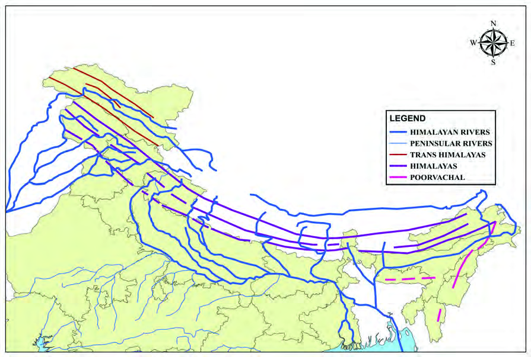<figcaption>Figure fig_ch02_p022_06 (Page 22)</figcaption></figure>
  <div class="page-content">
    <p>22<br>–šŒž—Dz”šȼc--<br>‹šuc-<br>Œš†––¢Žš“Ž‚}šs<br>ś†}Ĺ§¡ŠštÅx<br>—›Œš†››Æ†›ų<br>Œ„§‹“›Úų–›Ű<br>†„›cg‚›¡ź<br>¢ˆš•s†„›s‘Œš§<br>“}ڝˆ}›ĚšÄ<br>—›ŒšĹ›¡Ƃ…š†<br>†œ¡Žš’Ú“DZž—c<br>uc¢ušŅ›—›Œš†››¡<br>¢ušŒt›Æ<br>†›ų„§‹“›Úų<br>ucuš†„›ce‚›¡ź¢ˆš<br>•s†„›s‘šŒ†<br>všvŽuįs§¢sš–›<br>‚}ā›“Œš§iŎš<br>tį§¢†ƀšÇ—›Œš<br>ś¡Ƃ…š††„›sÇ<br>Œš†––¢Žš“Ž‚}šs<br>ś†}Ĺ§¡xŒw§„w§<br>—›Œš†››Æ†›ų„§‹“›<br>ڝųƖǥˆŅc<br>e‚›ź ¢ˆš•s†„›s‘š<br>„›Šǰu§¢š—›‚§<br>Œš†–§ Œ‚š“Œš§<br>s›’ÚÄ—›ŒšĹ›¡<br>†„œ“DZž—c<br>‹žˆ}Ĺ›Æ†›ųc (x›Ņc 1.19)—›ŒšÄ†„›s¡‘‚›Ž›ă›Ě§—›Œš<br>Ä †„œ‹žˆ}c ‚ƭššÚ› m¡ź ‹žˆ}¢”tŽĹ›Æ (My own atlas)<br>¢xÅڝs<br>x›Ņc 1.19<br>—›ŒšÄ†„›sÇ<br>—›ŒšÄ†„›sÇ<br>sšŽ¢Úšc<br>sšŽ¢Úšc<br>––§ښņ›ŽsÇ<br>––§ښņ›ŽsÇ<br>—›Œšŝ›<br>—›Œšŝ›<br>—›ŒšxÆ<br>—›ŒšxÆ<br>šÚ§†›ŽsÇ<br>šÚ§ †›ŽsÇ<br>šÚ§<br>šÚ§<br>zƣsšNJœÅ<br>zƣsšNJœÅ<br>—›ŒšxÆ<br>—›ŒšxÆ<br>Ƃ¢„”§<br>Ƃ¢„”§<br>ˆĕšŠ§<br>ˆĕšŠ§<br>{c†„›<br>{c†„›<br>¡x†šŠ§†„›<br>¡x†šŠ§†„›<br>Ž“›†„›<br>Ž“›†„›<br>›†„›<br>›†„›<br>–‚§z§†„›<br>–‚§z§†„›<br>xƠƆ„›<br>xƠƆ„›<br>xƠƆ„›<br>xƠƆ„›<br>Œš—›†„›<br>Œš—›†„›<br>–›Ű§†„›<br>–›Ű§†„›<br>¢Š‚ǵ†„›<br>¢Š‚ǵ†„›<br>¡sĆ„›<br>¡sĆ„›<br>¢–šÃ†„›<br>¢–šÃ†„›<br>¢–šÃ†„›<br>¢–šÃ†„›<br>všvŽ<br>všvŽ<br>ucuš†„›<br>ucuš†„›<br>uįs§†„›<br>uįs§†„›<br>Œ††„›<br>Œ††„›<br>Œ††„›<br>Œ††„›<br>sš‘›†„›<br>sš‘›†„›<br>¢sš–›†„›<br>¢sš–›†„›<br>iŎštį§<br>iŎštį§<br>—Ž›š†<br>—Ž›š†<br>Ɨ›<br>Ɨ›<br>ŽšzǚšÄ<br>ŽšzǚšÄ<br>uzšĹ§<br>uzšĹ§<br>Œ…DzƂ¢„”§<br>Œ…DzƂ¢„”§<br>Œ—šŽšȹ<br>Œ—šŽšȹ<br>yŜ–§u€§<br>yŜ–§u€§<br>p›•<br>p›•<br>{šÅtį§<br>{šÅtį§<br>Šœ—šÅ<br>Šœ—šÅ<br>e–c<br>e–c<br>Œ›ƀžÅ<br>Œ›ƀžÅ<br>Ņ›ˆŽ<br>Ņ›ˆŽ<br>Œ›¢ǡšDZ<br>Œ›¢ǡšDZ<br>†šuššÄ§<br>†šuššÄ§<br>–›Ú›c<br>–›Ú›c<br>eŽšxÆƂ¢„”§<br>eŽšxÆƂ¢„”§<br>ˆDž›ŒŠcušÇ<br>ˆDž›Œ ŠcušÇ<br>iĹÅƂ¢„”§<br>iĹÅƂ¢„”§<br>ˆ}§sš›Šc<br>ˆ}§sš›Šc<br>†šušÚųsÇ<br>†šušÚųsÇ<br>Œ›¢–š<br>Œ›¢–š<br>–žx›s<br>–šw§¢ˆš<br>–šw§¢ˆš<br>–›Ű†„›<br>–›Ű†„›<br>–›“š›s§<br>–›“š›s§<br>—›ŒšÄ†„›sÇ<br>iˆ„ǵœˆœ†„›sÇ<br>ğšÄ–§—›Œšc<br>—›Œšc<br>s›’ÚÄ—›Œšc<br>}œǙ†„›<br>}œǙ†„›<br>Š›š–§†„›<br>Š›š–§†„›<br>MAP NOT TO SCALE<br>ƖǦˆŅ<br>ƖǦˆŅ<br>uš¢Žš<br>uš¢Žš<br>zŦ›<br>zŦ›<br>¢Œvš<br>¢Œvš<br>tš–›<br>tš–›<br>„›ŠDZu§<br>„›ŠDZu§<br>¢š—›‚§<br>¢š—›‚§<br>Œš†–§<br>Œš†–§</p>
  </div>
</section>
<section class="page-section" id="page-23">
  <div class="page-header"><span class="page-number">Page 23</span></div>
  <figure class="diagram-card" id="fig_ch02_p023_01"><figcaption>Figure fig_ch02_p023_01 (Page 23)</figcaption></figure>
  <figure class="diagram-card" id="fig_ch02_p023_02"><figcaption>Figure fig_ch02_p023_02 (Page 23)</figcaption></figure>
  <figure class="diagram-card" id="fig_ch02_p023_03">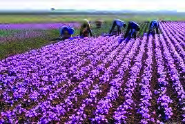<figcaption>Figure fig_ch02_p023_03 (Page 23)</figcaption></figure>
  <figure class="diagram-card" id="fig_ch02_p023_05"><figcaption>Figure fig_ch02_p023_05 (Page 23)</figcaption></figure>
  <figure class="diagram-card" id="fig_ch02_p023_06"><figcaption>Figure fig_ch02_p023_06 (Page 23)</figcaption></figure>
  <figure class="diagram-card" id="fig_ch02_p023_07"><figcaption>Figure fig_ch02_p023_07 (Page 23)</figcaption></figure>
  <div class="page-content">
    <p>23<br>ǢšÄ¢Å§-&lt;<br>¢šsś¡ź¡†s›Æ<br>x›Ņc 1.20 <br>sÿŒƀžՕ›<br>ŒĴ§<br>—›ŒšˆÅ“‚Ƃ¢„”ŧ¡ˆš‚“š›ˆÅ“‚ŒĴc“†ŒĴŒš§<br>sš¡ƀ}ų‚§ˆÅ“‚ˆŽ›Ǚ›‚›†–Ž›ă§ŒĴ›¡źv}†›c<br>‚Ž›“›ƀśc “DZ‚DZš–ŒĬšsc<br>‚šȺšŽā‘›Æ ¢†ÅĹ ‚Ž›s¢‘š}sž}›‚c £z“šc”c sž}‚<br>ǫ‚Œš ŒĴš§ sš¡ƀ}ų‚§<br>iÅų xŽ›“s‘›Æ “› ‚Ž›s¢‘š}<br>sž}›£z“šc”csĚŒĴš›Ž›Úc<br>sššÄ–š…›Ús<br>‚šȺŽs‘›Æ mÚƌĴ›¡ź †›¢äˆ<br>Œš§Ƃ…š†Œšcsš¡ƀ}ų‚§sšljœÅ<br>‚šȺŽ›¡—›Œš†›sdž›¢äˆ›Úų<br>e“–š„ā‘š§<br>s¢Ž“š–§ (Karewas). <br>¢†ÅĹŒc£z“šc”ā‘c†›Ě<br>ŒĴš›‚§g“sÿŒƀžՕ›Ú§ 6D൵URQ<br>Kesar)e†¢šzDZŒš§<br>––DzzšāÇ<br>iŽc ‹žƂՂ› ŒĴ›†c sšš“Ǚ ‚}ā› v}sā‘›¡<br>“DZ‚DZš–c—›ŒšÄ†›Žs‘›¡ ––DZzšā‘›ÆƂš¢„”›s“DZ‚DZš<br>–āÇǔǏ›Úų<br>s›’ÚÄ—›ŒšĹ›c“}ڝs›’ÚÄsųs‘›c”Žš”Ž›“šÅ<br>•›sŒ’200 ¡–ź›ŒœǮ›†§Œs‘›š›‹›Úų‚›†šÆiǑ¢Œtš<br>†›‚DZ—Ž›‚“†āÇsž}‚š›sš¡ƀ}ų<br>iŽc sž}ų‚›††–Ž›ă§ jǓš“§ sų‚›†šÆ —›Œš<br>ˆÅ“‚Ƃ¢„”ā‘›¡ £†–Åu›s––DZzšā‘›ce†ǔ‚Œš<br>ŒšǮcő”DZŒš§<br>iŽĹ›††–Ž›ă§†›‚DZ—Ž›‚“†āÇŒ‚Æ£”‚DZ¢Œt––DZ<br>zšā‘š‚ů (Tundra)“¡Žǫ ––DZzšā‘¡}‚}Åăg“›¡}<br>sššc<br>ˆÅ“‚†›ŽsÇڛ}›¡ ‚šȺŽs‘›Æ mÚƌĴ§ sš¡ƀ}šÄ<br>sšŽ¡ŒŦš›Ž›Úc?</p>
  </div>
</section>
<section class="page-section" id="page-24">
  <div class="page-header"><span class="page-number">Page 24</span></div>
  <figure class="diagram-card" id="fig_ch02_p024_01"><figcaption>Figure fig_ch02_p024_01 (Page 24)</figcaption></figure>
  <figure class="diagram-card" id="fig_ch02_p024_02"><figcaption>Figure fig_ch02_p024_02 (Page 24)</figcaption></figure>
  <figure class="diagram-card" id="fig_ch02_p024_04"><figcaption>Figure fig_ch02_p024_04 (Page 24)</figcaption></figure>
  <figure class="diagram-card" id="fig_ch02_p024_05"><figcaption>Figure fig_ch02_p024_05 (Page 24)</figcaption></figure>
  <figure class="diagram-card" id="fig_ch02_p024_06"><figcaption>Figure fig_ch02_p024_06 (Page 24)</figcaption></figure>
  <figure class="diagram-card" id="fig_ch02_p024_07">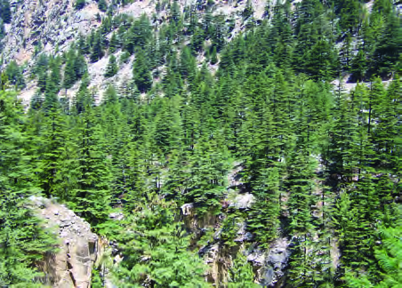<figcaption>Figure fig_ch02_p024_07 (Page 24)</figcaption></figure>
  <figure class="diagram-card" id="fig_ch02_p024_08"><figcaption>Figure fig_ch02_p024_08 (Page 24)</figcaption></figure>
  <div class="page-content">
    <p>24<br>–šŒž—Dz”šȼc--<br>‹šuc-<br>x›Ņc1.21<br>—›ŒšĹ›¡Ǚžˆ›sš÷“†c<br>Ƃ…š†¢„”œ¢š„Dzš†āÇ<br>ˆ}›ĚšÄ—›Œšc<br>s›’ÚÄ—›Œšc<br>ă›ušc (zƣsšljœÅ)<br>sšĕÄzcu(–›Ú›c)<br>¡—Œ›–§(šÚ§)<br>„›Ɩ ¡–¢Ʃš“(e–c)<br>ˆžÚ‘¡}‚šȺŽ (iŎštį§)<br>sš–›Žcu(e–c)<br>¢sšÅŠǮ§ (iŎštį§)<br>Œš†–§(e–c)<br>Žšzšz› ¢„”œ¢š„DZš†c (iŎštį§) ¡s§ŠÇ¡czš¢“š (Œ›ƀžÅ)<br>x›Ņc1.22 <br>pǯ¡ÚšƠÄsšĬšƜuāÇ<br>‚šȺŽs‘›ciŽcsĚˆÅ“‚<br>㎛“s‘›c eŅ†›‚DZ—Ž›‚“†<br>ā‘cg¡ˆš’›c“†ā‘csš<br>¡ƀ}ų 1000 Œ‚Æ  2000 ŒœǮÅ<br>“¡Ž iŽĹ›Æ fÅŝŒ›¢‚šǑ“†<br>āÇsššc£ˆÄ¢„“„šŽ‚}<br>ā› ǘžˆ›sš÷ƽäāÇ ˆÅ“‚<br>㎛“s‘›Æ sž}‚š› “‘Žų<br>Ƃ¢„”Ĺ›¡ź iŽc sž}ų‚›††<br>–Ž›ă§ iŽcsĚ ––DZā‘š<br>zž†›¡ˆÅ¢š¢š¡Ä¢ĦšÃmų›<br>“cnǮ“ciÅųƂ¢„”ā‘›Æ<br>fÆ£ˆÄˆÆ¢Œ}s‘csššc<br>“†Dzzœ“›–Ơŧ<br>–Ǵš‹š“›s“†‹žŒ›…šŽš‘Œǫ—›Œš<br>ˆÅ“‚Ƃ¢„”c“†DZzœ“›–Ơų<br>“Œš§ šÚ§ sǘžŽ›ŒšÄ pǮ¡Úš<br>ƠÄsšĬšƜuc—›Œƀ›‚}ā›†›Ž<br>“…›zœ“›“Åuā‘¡}‚†‚§f“š–<br>¢sůā‘š›“›}c<br>£z“Œį ›–Å“sÇ (Biosphere<br>Reserve), ¢„”œ¢š„DZš†āÇ (National<br>Park), “†DZzœ“›–¢ÿ‚āÇ (Wildlife<br>Sanctuary) ‚}ā›“¡Ƽšc“†DZzœ“›<br>–Ơś¡ź –cŽäŒš§ äDZc<br>“Ʃų‚§</p>
  </div>
</section>
<section class="page-section" id="page-25">
  <div class="page-header"><span class="page-number">Page 25</span></div>
  <figure class="diagram-card" id="fig_ch02_p025_01"><figcaption>Figure fig_ch02_p025_01 (Page 25)</figcaption></figure>
  <figure class="diagram-card" id="fig_ch02_p025_02"><figcaption>Figure fig_ch02_p025_02 (Page 25)</figcaption></figure>
  <figure class="diagram-card" id="fig_ch02_p025_03">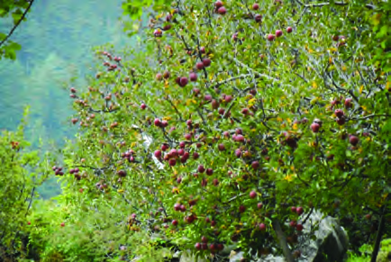<figcaption>Figure fig_ch02_p025_03 (Page 25)</figcaption></figure>
  <figure class="diagram-card" id="fig_ch02_p025_04"><figcaption>Figure fig_ch02_p025_04 (Page 25)</figcaption></figure>
  <figure class="diagram-card" id="fig_ch02_p025_05"><figcaption>Figure fig_ch02_p025_05 (Page 25)</figcaption></figure>
  <div class="page-content">
    <p>25<br>ǢšÄ¢Å§-&lt;<br>¢šsś¡ź¡†s›Æ<br>x›Ņc1.24<br>—›ŒšĹ›¡pŽfƀ›Ç¢ĹšĞc<br>Օ›<br>‹žˆŽŒšˆŽ›Œ›‚›sÇsšŽcˆÅ<br>“‚Ƃ¢„”ā‘›ÆՕ›‚šŽ‚¢ŒDZ†<br>s“š§<br>iŽc<br>¡xÿĹš<br>xŽ›“§ˆšsŒšsšĹŒĴ§(Immature <br>Soil) sĚ‚šˆ†› ‚}ā›“<br>š§ Ƃ‚›sžv}sāÇ mų›<br>ŽųšchƂ¢„”¡Ĺz†āÇ<br>“›“›… iˆzœ“†Õ•›s‘›Æ nÅ<br>¡ƀ}ų ˆÅ“‚㎛“sÇ ‚Нs<br>‘š›Ĺ›Ž›ă§ q¢Žš Ƃ¢„”Ĺ›†c<br>e†¢šzDZŒš “›‘sÇ Օ›¡xƭų ¡†Ƽ§ ˆ“ÅuāÇ<br>iŽ‘Ú›’ā§mų›“Œ’ÚšĹc¢uš‚Ơ§Œ›¢‚šǑˆ’“ÅuāÇ<br>mų›“<br>“–ŦsšĹc<br>Օ›<br>¡xƭų<br>s›’ÚÄ—›ŒšĹ›¡źˆÅ“‚㎛<br>“s‘›c ‚šȺšŽā‘›c Ƃ¢‚DZ<br>s›ă§ e–c šÅz››cu§ ¢Œt<br>s‘›Æ ¢‚›Û•›š§ sž}‚<br>š›iǫ‚§<br>“}ڝs›’ÚÄgŦDZ›¡sųs<br>‘›Æ ‚¢Ŕ”œ ¢ušŅz†‚ Ǚš†<br>ŒšǮە›(Shifting Cultivation) ¢ˆšǫ<br>ˆŽƠŽšu‚ Օ›Žœ‚›sÇ ˆ›Ŧ}<br>Žų“Žš§<br>ƜuˆŽ›ˆš†c<br>—›ŒšˆÅ“‚Ƃ¢„”ā‘›¡ z†ā‘¡} pŽ Ƃ…š† zœ“›‚<br>ŒšÅuŒš§ƜuˆŽ›ˆš†cƂ¢„”Ĺ›¡źiŽâŒŒ†–Ž›ă§sšš“<br>Ǚ›Æ ŒšǮc “Žų‚›†šÆ “‘ÅŝƜuā‘¡} g†Ĺ›c ŒšǮc<br>“Žų ‚šȺšŽā‘›Æ f}§ ˆ”<br>‚}ā› Ɯuā‘c iŽc sž}›<br>ˆÅ“‚‹šuā‘›Æ¡xƣŽ›š}§s‚›Ž<br>‚}ā›“c £”‚DZ¢Œtš<br>—›ŒšxÆ<br>šÚ§<br>‹šuā‘›Æ<br>‚ƀ›¡† e‚›zœ“›ÚšÄ ¢”•›<br>ǫ &#x27;šÚ§&#x27;¢ˆšǫƜuā¡‘c<br>“‘Åŝųˆ}›ĚšÄ—›Œš<br>ś¡ˆÅ“‚ƀÆ¢Œ}s‘›ÆƜuˆŽ›<br>ˆš†c†}ŝųg}z†“›‹šuŒš§<br>&#x27;uċÅ&#x27;<br>x›Ņc1.23 <br>—›ŒšĹ›¡‚ЧՕ››}c<br>x›Ņc1.25<br>ƜuˆŽ›ˆš†c</p>
  </div>
</section>
<section class="page-section" id="page-26">
  <div class="page-header"><span class="page-number">Page 26</span></div>
  <figure class="diagram-card" id="fig_ch02_p026_01"><figcaption>Figure fig_ch02_p026_01 (Page 26)</figcaption></figure>
  <figure class="diagram-card" id="fig_ch02_p026_02"><figcaption>Figure fig_ch02_p026_02 (Page 26)</figcaption></figure>
  <figure class="diagram-card" id="fig_ch02_p026_03"><figcaption>Figure fig_ch02_p026_03 (Page 26)</figcaption></figure>
  <figure class="diagram-card" id="fig_ch02_p026_04"><figcaption>Figure fig_ch02_p026_04 (Page 26)</figcaption></figure>
  <div class="page-content">
    <p>26<br>–šŒž—Dz”šȼc--<br>‹šuc-<br>“›“Ž–š¢ÿ‚›s“›„DZ¡} –—š¢Ĺš¡} uċÅ z†“›‹šu¡Ĺ<br>ƀǮ›ǫsž}‚Æ“›“ŽāÇe¢†Ǵ•›ă›ž<br>}ž›–c<br>‹žƂՂ›–“›¢”•‚sÇ<br>e†sžŒš‚›†šÆ<br>—›ŒšƂ¢„”<br>āÇ “›¢†š„–ĕšŽĹ›†§ n¡ –š…DZ‚ǫ pŽ “ŽŒš†„šs<br>¢Œtš›Œš››ĞĬ§‚œÅĽš}†“Œš›ŠŰ¡ƀЍšŅs‘š§<br>h ¢Œts‘›¡ }ž›–c“›s–†Ĺ›†§ ‚}ڌ›Ğ‚§ £sš–c<br>Œš†––¢Žš“ŽceŒÅ†šƒ§¢—Œsį§ –š—›Š§‚}ā›†›Ž“…›<br>‚œÅĽš}†¢sůāÇ—›ŒšˆÅ“‚‹šuā‘›Ĭ§†žǮšĬsÇÚ§<br>ŒÄˆ‚¡ųg“›}ā‘›¢Ú§ –ĕšŽ›sÇmś›Žų<br>ˆ¡ĹšƠ‚šc†žǮšĬ›ÆƖ›Ğœ•sšÅ—›ŒšˆÅ“‚Ƃ¢„”ā‘›¡<br>e†sžsšš“Ǚ‚›Ž›ă›Ě§g“›}ā‘›Æ–t“š–¢sůāÇ<br>“›s–›ƀ›ă¢‚š¡}š§}ž›–c“›s–†Ĺ›¡źŽĬšcvĞcfŽc‹›<br>ڝų‚§ •›c šÅz››cw§ •›¢Ƽšw§ eÆ¢Œš š›¢sǮ§<br>Œ¢–š›£††›‚šÆ‚}ā››¢–šÅЧˆĞāÇgųc Ƃ…š†<br>}ž›ǡ§¢sůā‘š§<br>1953 ¡Œ§ 29†§¡•Åƀ ¡}Ė›cu§¢†šÅ¡ucm§ŒĬ§—›šŽ›c<br>m“ǡ§¡sš}Œ}›sœ’}ڛ‚›†¢”•Œš§}ž›–c“›s–†Ĺ›¡ź<br>ŒžųšcvĞŒš f…†›s }ž›–c–š…DZ‚sÇ —›ŒšƂ¢„”ŧ<br>“›s–›ă‚§gų§ˆÅ“‚š¢Žš—cˆšŽš£ø›cu§Ǘœ›cu§‚}<br>ā›–š—–›s“›¢†š„–ĕšŽ¢Œtcn¡“›s–›ă›ĞĬ§<br>ˆÅ“‚āÇƂ‚›ŠŰā‘ƽŒ›ă§<br>ˆÅ“‚āÇƂ‚›ŠŰā‘ƽŒ›ă§<br>ˆc¢šsś¢ÚǬs“š}ā‘š§<br>ˆc¢šsś¢ÚǬs“š}ā‘š§<br><br>¡}Ė›cu§¢†šÅ¡u<br>(Œš‘Ĺ›¢Ú§ ¡Œš’›ŒšǮc<br>†}ś‚§)</p>
  </div>
</section>
<section class="page-section" id="page-27">
  <div class="page-header"><span class="page-number">Page 27</span></div>
  <figure class="diagram-card" id="fig_ch02_p027_01"><figcaption>Figure fig_ch02_p027_01 (Page 27)</figcaption></figure>
  <figure class="diagram-card" id="fig_ch02_p027_02"><figcaption>Figure fig_ch02_p027_02 (Page 27)</figcaption></figure>
  <figure class="diagram-card" id="fig_ch02_p027_03"><figcaption>Figure fig_ch02_p027_03 (Page 27)</figcaption></figure>
  <div class="page-content">
    <p>27<br>ǢšÄ¢Å§-&lt;<br>¢šsś¡ź¡†s›Æ<br>1. iŎˆÅ“‚¢ŒtŒš› ŠŰ¡ƀĞ z†zœ“›‚Ĺ›¡ź ¢†Å<br><br>ښ’§xmų‚¡ÚĞ›ÆpŽiˆ†DZš–c‚ƭššÚs<br>2. iŎˆÅ“‚¢Œt¡}‹šuŒšˆÅ“‚†›ŽsÇgŦDZ¡}Žžˆ<br><br>¢Žt›Æe}š‘¡ƀ}Ĺ›‹žˆ}¢”tŽĹ›Æ (My Own Atlas) ¢xÅ<br><br>ڝs<br>3. iŎˆÅ“‚¢Œt›¡ z†ā‘¡} ¡‚š’›Œš› ŠŰ¡ƀĞ<br><br>x›ŅāÇ¢xÅŧxŒÅˆŅ›s‚ƭššÚs<br>—›ŒšˆÅ“‚c pŽ Ƃ‚›ŠŰŒƼ ˆsŽc ˆc¢šsś¢Ú§<br>‚ų›Ğ s“š}Œš§ ˆ‚› e›“›¡źc e‚›zœ“†Ĺ›¡źc<br>e†ŽžˆœsŽĹ›¡źc ˆš‚s‘›¢Ú§ ‚ų›Ğ “š‚›s‘š§<br>—›Œšc<br>‚}ÅƂ“ÅņāÇ</p>
  </div>
</section>
<section class="page-section" id="page-28">
  <div class="page-header"><span class="page-number">Page 28</span></div>
  <figure class="diagram-card" id="fig_ch02_p028_01"><figcaption>Figure fig_ch02_p028_01 (Page 28)</figcaption></figure>
  <figure class="diagram-card" id="fig_ch02_p028_02">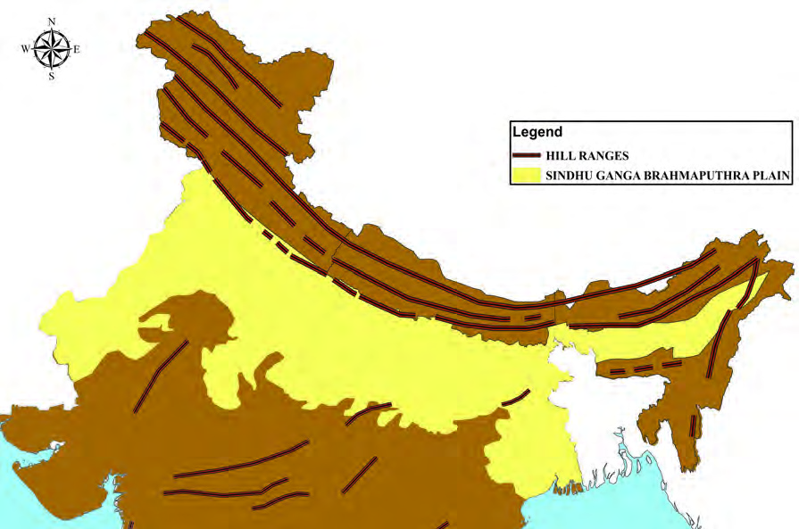<figcaption>Figure fig_ch02_p028_02 (Page 28)</figcaption></figure>
  <figure class="diagram-card" id="fig_ch02_p028_03">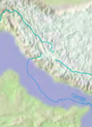<figcaption>Figure fig_ch02_p028_03 (Page 28)</figcaption></figure>
  <figure class="diagram-card" id="fig_ch02_p028_04"><figcaption>Figure fig_ch02_p028_04 (Page 28)</figcaption></figure>
  <figure class="diagram-card" id="fig_ch02_p028_05">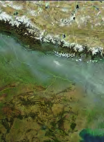<figcaption>Figure fig_ch02_p028_05 (Page 28)</figcaption></figure>
  <figure class="diagram-card" id="fig_ch02_p028_06"><figcaption>Figure fig_ch02_p028_06 (Page 28)</figcaption></figure>
  <div class="page-content">
    <p>x›Ņc 2.1<br>iŎˆÅ“‚¢Œt<br>iŎˆÅ“‚¢Œt<br>–›ŰucuƖǦˆŅš–Œ‚c<br>–›ŰucuƖǦˆŅš–Œ‚c<br>iˆ„ǵœˆ›ˆœ~‹žŒ›<br>iˆ„ǵœˆ›ˆœ~‹žŒ›<br>–›ŰucuƖǦˆŅš–Œ‚c<br>–›ŰucuƖǦˆŅš–Œ‚c<br>MAP NOT TO SCALE<br>“›”š–Œ‚‹ž“›Æ<br>2<br>Œš†cŒ¡ĞiÅų†›ÆڝųˆÅ“‚āÇe‚›“›”šŒš–Œ‚‹žŒ›sLjœ~‹žŒ›<br>sÇxĞ¡ˆšǫųŒšŽDZāÇ‚šȺŽsÇŒ‚š£““›…DZā‘š‹žŽžˆ<br>āÇ‹­¢ŒšˆŽ›‚Ĺ›Æsš¡ƀ}ų„”äځڛ†§“Å•āÇ¡sšĬ§Žžˆc<br>¡sšĬ“š›“ †ƣ¡} ŽšzDZś¡ź ‹žƂՂ›“›‹šuā‘›¡šųš iŎˆÅ“‚<br>¢Œt¡Ú›ă§ †›āÇ s’›Ě e…DZšĹ›Æ “›”„Œš› Œ†Ǡ›šÚ›¢Ƽdzš<br>x“¡}<br>¢xÅĹ›Ğǫ ‹žˆ}c (x›Ņc 2.1) †›Žœä›Úž iŎˆÅ“‚¢Œt¡}<br>¡‚ڝ‹šuŚciˆ„Ǵœˆœˆœ~‹žŒ›¡}“}ښcǙ›‚›¡xƭų“›ɀ‚ŒšpŽ<br>‹žƂՂ›“›‹šuc sšų›¢Ƽ. e‚›“›”šŒš pŽ mÚƖŒ‚Œš›‚§ –›Ű<br>ucuƖǥˆŅš–Œ‚cmųš§g‚§e›¡ƀ}ų‚§<br>–žx›s<br>ˆÅ“‚†›ŽsÇ<br>–›ŰucuƖǦˆŅš–Œ‚c</p>
  </div>
</section>
<section class="page-section" id="page-29">
  <div class="page-header"><span class="page-number">Page 29</span></div>
  <figure class="diagram-card" id="fig_ch02_p029_01"><figcaption>Figure fig_ch02_p029_01 (Page 29)</figcaption></figure>
  <figure class="diagram-card" id="fig_ch02_p029_02"><figcaption>Figure fig_ch02_p029_02 (Page 29)</figcaption></figure>
  <figure class="diagram-card" id="fig_ch02_p029_03"><figcaption>Figure fig_ch02_p029_03 (Page 29)</figcaption></figure>
  <figure class="diagram-card" id="fig_ch02_p029_04"><figcaption>Figure fig_ch02_p029_04 (Page 29)</figcaption></figure>
  <figure class="diagram-card" id="fig_ch02_p029_05">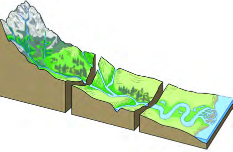<figcaption>Figure fig_ch02_p029_05 (Page 29)</figcaption></figure>
  <figure class="diagram-card" id="fig_ch02_p029_06"><figcaption>Figure fig_ch02_p029_06 (Page 29)</figcaption></figure>
  <figure class="diagram-card" id="fig_ch02_p029_07">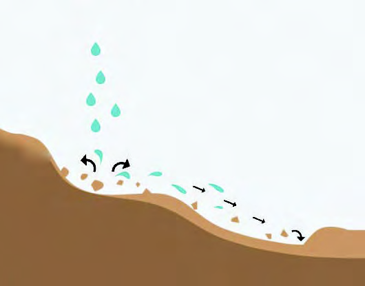<figcaption>Figure fig_ch02_p029_07 (Page 29)</figcaption></figure>
  <figure class="diagram-card" id="fig_ch02_p029_09"><figcaption>Figure fig_ch02_p029_09 (Page 29)</figcaption></figure>
  <figure class="diagram-card" id="fig_ch02_p029_10"><figcaption>Figure fig_ch02_p029_10 (Page 29)</figcaption></figure>
  <figure class="diagram-card" id="fig_ch02_p029_11"><figcaption>Figure fig_ch02_p029_11 (Page 29)</figcaption></figure>
  <figure class="diagram-card" id="fig_ch02_p029_13"><figcaption>Figure fig_ch02_p029_13 (Page 29)</figcaption></figure>
  <div class="page-content">
    <p>“›”š–Œ‚‹ž“›Æ<br>29<br>iĹ¢ŽŦDZÄ –Œ‚āÇ mųc e›¡ƀ<br>}ųh‹žƂՂ›“›‹šucŽžˆ¡ƀĞ¡‚ā¡†<br>¡ų§†ŒÚ§¢†šÚǰ<br>p’sų ¡“ǫcsšǮ§—›Œš†›sÇ‚›ŽŒš<br>‚}ā› ‹­¢ŒšˆŽ›‚Ĺ›Æ Ƃ“Åśڝų<br>Šš—DZ”Þ›s‘¡}<br>†›ŽŦŽŒš Ƃ“ÅĹ<br>†‰Œš›‹­¢ŒšˆŽ›‚Ĺ›Æ£““›…DZŒšÅų‹žŽžˆā‘Ĭšsų<br>f‚›†šÆg“¡‹žŽžˆŽžˆœsŽ–—š›s¡‘ųc‹žŽžˆā‘<br>Ĭšsų‚›†§–—šsŽŒšƂ⛍s¡‘‹žŽžˆŽžˆœsŽƂ⛍<br>s¡‘ųc “›‘›Úų‹­‚›s“c Žš–›<br>s“c £z“›s“ŒšƂ⛍s‘›ž¡}<br>”›sÇ ¡ˆš}›ĚĬšsų<br>”›š<br>“ǘÚ¡‘ h Šš—DZ”Þ›sÇ pŽ›<br>}ŝ†›ųc<br>Œ¡ǮšŽ›}¢ĹÚ§<br>†œÚ›<br>¡ÚšĬ¢ˆšssc<br>‚š’§ųƂ¢„”<br>ā‘›Æ †›¢äˆ›Úsc ¡xƭų<br>hƂ⛍¡ †›¢äˆcmųš§<br>“›‘›Úų‚§g†›x›Ņc2.2NJŗ›Úž<br>pŽiÅųƂ¢„”ŝǫg‘s›”›š<br>ˆ„šÅƒā¡‘ Œ’¡“ǫc Œ¡ǮšŽ Ƃ¢„<br>”¢ĹÚ§†œÚ›¡ÚšĬ¢ˆš›†›¢ä<br>ˆ›Úų‚§mā¡†¡ų§sĬ›¢Ƽ?<br>iÅų Ƃ¢„”ā‘›Æ†›ųc<br>i„§‹“›Úų<br>†œÅ㚐sÇ<br>¡xxšs‘š›p’s›¢ăÅų§<br>eŽ“›s‘šsscˆeŽ<br>“›sÇ<br>¢xÅų§<br>†„›š›<br>“›sš–cƂšˆ›Úsc ¡x<br>ƭųiÅųƂ¢„”ā‘›Æ<br>†›ųci„§‹“›¡ăš’sų†„›<br>sÇ<br>“—›ă¡sšĬ“Žų<br>e“–š„āÇ ‚š’§ųƂ¢„”<br>ā‘›Æ<br>†›¢äˆ›ă§<br>sš<br>⢌<br>e‚›“›”šŒš<br>mÚÆ–Œ‚āÇiÇƀ¡}<br>ǫ †›¢äˆ‹žŽžˆāÇ<br>ǔǏ›Ú¡ƀ}ų<br>x›Ņc2.2<br>‚š’§ų<br>Ƃ¢„”ā‘›Æ<br>†›¢äˆ›Úų<br>g‘s›“ǘÚ¡‘<br>†œÚ›¡ÚšĬ¢ˆšsų<br>Œ’ŝǫ›sÇ<br>†„›sÇp’Ú›¡ÚšĬ“Žų ¡x‘›<br>ŒÆxŽÆmų›“iÇ¡ƀ¡}ǫ<br>”›š“”›Ǐā‘š§mÚÆ<br>mÚÆ<br>†„›sÇ i„§‹“›Úų Ƃ¢„”¡Ĺ Ƃ‹“Ǚš†¡Œųc<br>e“ s}›¢š Œ¢Ǯ¡‚ÿ›c zš”Ĺ›¢š ˆ‚›Úų<br>g}¡Ĺ†„œŒt¡Œųc“›‘›Úų<br>iˆŽ›vĞc<br>i„§‹“ǚš†c<br>†„œŒtc<br>Œ…DzvĞc<br>¢ˆš•s†„›sÇ<br>sœ’§vĞc</p>
  </div>
</section>
<section class="page-section" id="page-30">
  <div class="page-header"><span class="page-number">Page 30</span></div>
  <figure class="diagram-card" id="fig_ch02_p030_01"><figcaption>Figure fig_ch02_p030_01 (Page 30)</figcaption></figure>
  <figure class="diagram-card" id="fig_ch02_p030_02">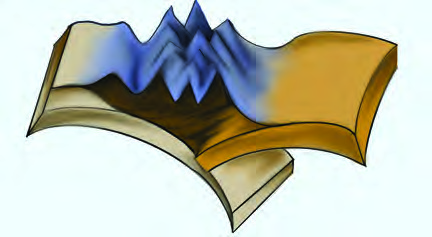<figcaption>Figure fig_ch02_p030_02 (Page 30)</figcaption></figure>
  <figure class="diagram-card" id="fig_ch02_p030_03"><figcaption>Figure fig_ch02_p030_03 (Page 30)</figcaption></figure>
  <figure class="diagram-card" id="fig_ch02_p030_05"><figcaption>Figure fig_ch02_p030_05 (Page 30)</figcaption></figure>
  <figure class="diagram-card" id="fig_ch02_p030_06"><figcaption>Figure fig_ch02_p030_06 (Page 30)</figcaption></figure>
  <figure class="diagram-card" id="fig_ch02_p030_07"><figcaption>Figure fig_ch02_p030_07 (Page 30)</figcaption></figure>
  <figure class="diagram-card" id="fig_ch02_p030_08"><figcaption>Figure fig_ch02_p030_08 (Page 30)</figcaption></figure>
  <figure class="diagram-card" id="fig_ch02_p030_09">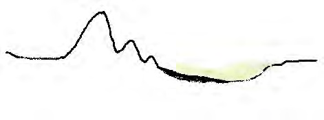<figcaption>Figure fig_ch02_p030_09 (Page 30)</figcaption></figure>
  <figure class="diagram-card" id="fig_ch02_p030_11"><figcaption>Figure fig_ch02_p030_11 (Page 30)</figcaption></figure>
  <figure class="diagram-card" id="fig_ch02_p030_12"><figcaption>Figure fig_ch02_p030_12 (Page 30)</figcaption></figure>
  <figure class="diagram-card" id="fig_ch02_p030_13"><figcaption>Figure fig_ch02_p030_13 (Page 30)</figcaption></figure>
  <figure class="diagram-card" id="fig_ch02_p030_14"><figcaption>Figure fig_ch02_p030_14 (Page 30)</figcaption></figure>
  <figure class="diagram-card" id="fig_ch02_p030_15"><figcaption>Figure fig_ch02_p030_15 (Page 30)</figcaption></figure>
  <figure class="diagram-card" id="fig_ch02_p030_16"><figcaption>Figure fig_ch02_p030_16 (Page 30)</figcaption></figure>
  <figure class="diagram-card" id="fig_ch02_p030_17"><figcaption>Figure fig_ch02_p030_17 (Page 30)</figcaption></figure>
  <div class="page-content">
    <p>‹šuc-<br>30<br>gŎśÆ—›ŒšĹ›Æ†›ųc<br>iˆ„Ǵœˆœ gŦDZ›Æ†›ųc iŁ<br>“›¡ăš’sų †„›sÇ “—›ă<br>¡sšĬ“ųe“–š„ādž›¢ä<br>ˆ›Ú¡ƀĞš§<br>‰‹ž›ǐŒš<br>–›ŰucuƖǥˆŅš–Œ‚c<br>Žžˆ¡ƀĞ‚§<br>—›ŒšŽžˆœsŽ<br>‰Œš› —›ŒšĹ›¡ź<br>¡‚<br>ښ›Žžˆ¡ƀĞe‚›“›”šŒš<br>‚}śš§ e“ †›¢äˆ›Ú<br>¡ƀĞ‚§ „”äځڛ†§ “Å•<br>ā¢‘š‘c †}ų<br>†›¢äˆƂ<br>⛍¡} ‰Œšš§ h –Œ‚c Žžˆc¡sšĬ‚§ g“›}¡Ĺ mÚÆ †›¢äˆ<br>ś¡źs†cns¢„”c1000 ŒœǮÅŒ‚Æ2000 ŒœǮÅ“¡Žš§–›ŰucuƖǥˆŅš<br>–Œ‚Ĺ›¡ź ŽžˆœsŽ¡Ĺ –žx›ƀ›Úų ¢Žtšx›Ņc(x›Ņc2.3) †›Žœä›Úž<br><br>—›ŒšŽžˆœsŽĹ›¡ź‰Œš›<br>—›ŒšĹ›¡ź¡‚Úš›Žžˆ¡ƀĞ<br>—›ŒšĹ›¡ź¡‚Úš›Žžˆ¡ƀĞ<br>e‚›“›”šŒš‚}c<br>e‚›“›”šŒš‚}c<br>ž¢•Dzĉsc<br>ž¢•Dzĉsc<br>—›ŒšˆÅ“‚ŽžˆœsŽc<br>—›ŒšˆÅ“‚ŽžˆœsŽc<br>g<br>ŦDz<br>Ä<br>‰<br><br>s<br>c<br>g<br>ŦDz<br>Ä<br>‰<br><br>s<br>c<br>–›ŰucuƖǥˆŅš–Œ‚Ĺ›ž¡}p’sų†„›sÇn¡‚š¡Ú¡ų§<br>‹žˆ}c†›Žœä›ă§(x›Ņc 2.4)ˆĞ›s¡ƀ}Ĺž<br>zucu<br>zŒ†<br>z¡Š‚§“<br>z<br>—›ŒšĹ›Æ†›ųciˆ„Ǵœˆœˆœ~‹žŒ››Æ†›ųci„§‹“›¡ăš’sų†„›s¡‘ƒšâŒc<br>—›ŒšÄ †„›s¡‘ųc iˆ„Ǵœˆœ †„›s¡‘ųc “›‘›Úų –›ŰucuƖǥˆŅš<br>–Œ‚Ĺ›ž¡}p’sų†„›s¡‘e“¡}i„§‹“Ǚš†¡Ĺe}›Ǚš†ŒšÚ› —›ŒšÄ<br>†„›sÇmųciˆ„Ǵœˆœ†„›s¡‘ųc‚Žc‚›Ž›ă§ˆĞ›s¡ƀ}Ĺsg‚›†š›x›Ņc (2.1),<br>x›Ņc (2.4)mų›“iˆ¢šu¡ƀ}ĹŒ¢Ƽš<br>—›ŒšÄ†„›sÇ<br>iˆ„ǵœˆœ†„›sÇ<br>z<br>z<br>x›Ņc 2.3<br>}›ŠǯĈœ~‹žŒ›<br>—›Œšŝ›<br>—›ŒšxÆ<br>–›“š›s§<br>–›ŰucuƖǦˆŅš–Œ‚c<br>iˆ„ǵœˆœˆœ~‹žŒ›<br>e“–š„†›¢äˆc<br>f”“DZނƩ§ŒšŅŒšǫ<br>x›ŅœsŽc¢‚š‚§e}›Ǚš†ŒšÚ›Ƽ</p>
  </div>
</section>
<section class="page-section" id="page-31">
  <div class="page-header"><span class="page-number">Page 31</span></div>
  <figure class="diagram-card" id="fig_ch02_p031_01"><figcaption>Figure fig_ch02_p031_01 (Page 31)</figcaption></figure>
  <figure class="diagram-card" id="fig_ch02_p031_02"><figcaption>Figure fig_ch02_p031_02 (Page 31)</figcaption></figure>
  <figure class="diagram-card" id="fig_ch02_p031_04"><figcaption>Figure fig_ch02_p031_04 (Page 31)</figcaption></figure>
  <figure class="diagram-card" id="fig_ch02_p031_05"><figcaption>Figure fig_ch02_p031_05 (Page 31)</figcaption></figure>
  <figure class="diagram-card" id="fig_ch02_p031_07"><figcaption>Figure fig_ch02_p031_07 (Page 31)</figcaption></figure>
  <div class="page-content">
    <p>“›”š–Œ‚‹ž“›Æ<br>31<br>–›Űž†„œŒtcŒ‚Æucuš†„œŒtc“¡Žns¢„”c3200s›¢šŒœǮÅ<br>†œ‘Ĺ›Æ“DZšˆ›ăs›}ڝųh–Œ‚c¢šsś¡‚¡ųnǮ“c<br>“›mÚÆƂ¢„”Œš§ns¢„”c2400s›¢šŒœǮņœ‘Ĺ›Æh<br>–Œ‚c gŦDZ›Æ “DZšˆ›ă›Ž›Úų s›’ڝ†›ųc ˆ}›Ěš¢šĞ§<br>“›”šŒšsų h –Œ‚Ĺ›¡ź  ”Žš”Ž› “œ‚› 150 s›¢šŒœǮÅ<br>Œ‚Æ 300 s›¢šŒœǮÅ “¡Žš§ h –Œ‚Ĺ›¡ź  e‚›ŽsÇ<br>“}Ú§–›“š›s§ˆÅ“‚†›Žs‘c¡‚Ú§iˆ„Ǵœˆœˆœ~‹žŒ›¡}<br>⌎—›‚Œš“}ÚÄeŽ›ss‘Œš§<br>h –Œ‚Ĺ›¡ź  “›ǘœÅc ns¢„”c 7 äc x‚ŽNJ<br>s›¢šŒœǮš§ “‘Úžǫ ŒĴ§ Œ‚›š z‹DZ‚ e†sž<br>sšš“ǙˆŽų‹žƂՂ›mųœ–“›¢”•‚s‘šÆhƂ¢„”c<br>Օ›Ú§n¡e†¢šzDZŒš¢Œtš›‚œÅų›Ž›Úų<br>‹žŒ›”šȻˆŽŒš›p¡ŽšǮ ‹žƂՂ›“›‹šuŒš›g‚›¡†ˆŽ›u›Úš<br>¡Œÿ›c †„œ“DZ“Ǚ †„›s‘¡} p’Ú›¡ź „›” ‹žƂՂ›¡}<br>–“›¢”•‚ mų›“¡ e}›Ǚš†ŒšÚ› e‚›“›ɀ‚Œš h<br>–Œ‚¡Ĺ†š§Ƃš¢„”›s“›‹šuā‘š›‚›Ž›Úǰ<br>iĹ¢ŽŦDZÄ–Œ‚ā‘¡}s›’Ú§ˆ}›Ěš§e‚›ŽsÇgŦDZ¡}<br>‹žƂՂ›‹žˆ}ś¡ź–—š¢Ĺš¡}s¡ĬśˆĞ›s¡ƀ}Ĺž<br>x“¡} †Æs››Ğǫ ‹žˆ}c (x›Ņc 2.4) †›Žœä›ă§ iĹ¢ŽŦDZÄ<br>–Œ‚Ĺ›¡ź †š§ Ƃš¢„”›s“›‹šuāÇ n¡‚Ƽš¡Œų§ ˆĞ›s<br>¡ƀ}Ĺž<br>1ŽšzǙšÄ–Œ‚c<br>2.<br>3.<br>4</p>
  </div>
</section>
<section class="page-section" id="page-32">
  <div class="page-header"><span class="page-number">Page 32</span></div>
  <figure class="diagram-card" id="fig_ch02_p032_01"><figcaption>Figure fig_ch02_p032_01 (Page 32)</figcaption></figure>
  <figure class="diagram-card" id="fig_ch02_p032_03"><figcaption>Figure fig_ch02_p032_03 (Page 32)</figcaption></figure>
  <figure class="diagram-card" id="fig_ch02_p032_04"><figcaption>Figure fig_ch02_p032_04 (Page 32)</figcaption></figure>
  <figure class="diagram-card" id="fig_ch02_p032_05"><figcaption>Figure fig_ch02_p032_05 (Page 32)</figcaption></figure>
  <figure class="diagram-card" id="fig_ch02_p032_06">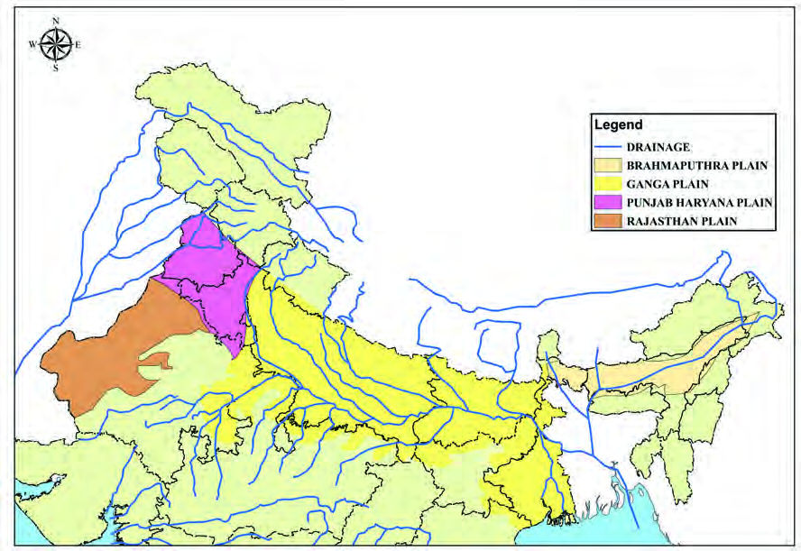<figcaption>Figure fig_ch02_p032_06 (Page 32)</figcaption></figure>
  <div class="page-content">
    <p>‹šuc-<br>32<br>g†› q¢Žš Ƃš¢„”›s “›‹šuā‘¡}c –“›¢”•‚s¡‘¡ŦƼš<br>¡Œų§†ŒÚ§ˆŽ›¢”š…›Úšc<br>ŽšzǚšÄ–Œ‚c<br>ƒšÅ ŒŽ‹žŒ› iÇ¡ƀ}ų ŽšzǙšÄ –Œ‚c iĹ¢ŽŦDZÄ –Œ‚<br>Ĺ›¡ź ˆ}›Ěš¢ eǮŒš§ ƒšÅ ŒŽ‹žŒ›¡} Œžų›Æ ŽĬ§<br>‹šu“c ŽšzǙš†›š§  Ǚ›‚›¡xƭų‚§ ŠšÚ›‹šuc —Ž›<br>š†ˆĕšŠ§uzšĹ§mųœeÆ–cǙš†ā‘›š›“DZšˆ›ă<br>s›}ڝų ƒšÅĽ ŒŽ‹žŒ›¢Œt eƒ“š<br>ŒŽǙ› mųc<br>eŅŒŽ‹žŒ›¢ŒteŅ“ŽĬ–Œ‚c
eƒ“š ŽšzǙšÄŠšuÅ<br>mųc ƒšÅŒŽ‹žŒ›¡ ŽĬ§ Ƃ…š†¢Œts‘š›‚Žc‚›Ž›Úǰ<br>ƒšÅ ŒŽ‹žŒ›¡} ‹žŒ›”šȻˆŽŒš –“›¢”•‚sÇ ‚}Åųǫ<br>ˆš~‹šuā‘›ÆƂ‚›ˆš„›ă›ĞĬ§<br>eŽš“› ˆÅ“‚†›Ž¡} ˆ}›Ěššš§ ŽšzǙšÄ –Œ‚c<br>Ǚ›‚›¡xƭų‚§<br>gŦDZ¡}<br>‹žƂՂ›‹žˆ}ś¡ź<br>–—š¢Ĺš¡}<br>eŽš“›<br>ˆÅ“‚†›Ž¡}Ǚš†cs¡ĬŞ<br>eŽš“›ˆÅ“‚†›ŽƩ§ ŽšzǙšÄ–Œ‚Ĺ›¡źsšš“Ǚ›<br>ǫ–Ǵš…œ†ce¢†Ǵ•›ă›ž<br>gÄ–§<br>gÄ–§<br>{c<br>{c<br>Ž“›<br>Ž“›<br>¡x†šŠ§<br>¡x†šŠ§<br>–›Ű§<br>–›Ű§<br>¡Š‚§“<br>¡Š‚§“<br>¡sÄ<br>¡sÄ<br>¢–šÃ<br>¢–šÃ<br>Œ†<br>Œ†<br>uįs§<br>uįs§<br>ucu<br>ucu<br>¢ušŒ‚›<br>¢ušŒ‚›<br>¢sš–›<br>¢sš–›<br>ƖǦˆŅ<br>ƖǦˆŅ<br>všvŽ<br>všvŽ<br>sš‘›<br>sš‘›<br>iĹ¢ŽŦDzÄ–Œ‚c<br>iĹ¢ŽŦDzÄ–Œ‚c<br>Ƃš¢„”›s“›‹šuāÇ<br>Ƃš¢„”›s“›‹šuāÇ<br>x›Ņc2.4<br>„›ŠDZu§<br>„›ŠDZu§<br>¢š—›‚§<br>¢š—›‚§<br>–‚§z§<br>–‚§z§<br>Š›š–§<br>Š›š–§<br>–žx›s<br>†„›sÇ<br>ƖǦˆŅš–Œ‚c<br>ucuš–Œ‚c<br>ˆĕšŠ§—Ž›š†–Œ‚c<br>ŽšzǚšÄ–Œ‚c<br>}œǙ<br>}œǙ<br>Œš†–§<br>Œš†–§<br>MAP NOT TO SCALE<br>ž›<br>ž›</p>
  </div>
</section>
<section class="page-section" id="page-33">
  <div class="page-header"><span class="page-number">Page 33</span></div>
  <figure class="diagram-card" id="fig_ch02_p033_01"><figcaption>Figure fig_ch02_p033_01 (Page 33)</figcaption></figure>
  <figure class="diagram-card" id="fig_ch02_p033_02"><figcaption>Figure fig_ch02_p033_02 (Page 33)</figcaption></figure>
  <figure class="diagram-card" id="fig_ch02_p033_03">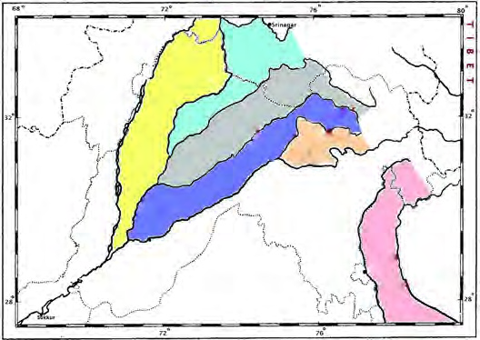<figcaption>Figure fig_ch02_p033_03 (Page 33)</figcaption></figure>
  <figure class="diagram-card" id="fig_ch02_p033_05"><figcaption>Figure fig_ch02_p033_05 (Page 33)</figcaption></figure>
  <figure class="diagram-card" id="fig_ch02_p033_06"><figcaption>Figure fig_ch02_p033_06 (Page 33)</figcaption></figure>
  <figure class="diagram-card" id="fig_ch02_p033_07"><figcaption>Figure fig_ch02_p033_07 (Page 33)</figcaption></figure>
  <figure class="diagram-card" id="fig_ch02_p033_08"><figcaption>Figure fig_ch02_p033_08 (Page 33)</figcaption></figure>
  <figure class="diagram-card" id="fig_ch02_p033_09"><figcaption>Figure fig_ch02_p033_09 (Page 33)</figcaption></figure>
  <div class="page-content">
    <p>“›”š–Œ‚‹ž“›Æ<br>33<br>sš›sŒš›ŒšŅc†œ¡Žš’Úǫž›h–Œ‚Ĺ›¡Ƃ…š†<br>†„›š§ŽšzǙš†›Æ†›Ž“…›iƀ‚}šsā‘Ĭ§–šc‹Å„›„Ǵš†<br>–Å¢ušÇ mų›“ ŽšzǙšÄ –Œ‚Ĺ›¡ Ƃ…š† iƀ‚}šs<br>ā‘š§<br>ˆĕšŠ§—Ž›š†–Œ‚c<br>ŽšzǙšÄ–Œ‚Ĺ›¡źƂ…š†–“›¢”•‚s¡‘ڝ›ă§†›āÇ<br>Œ†Ǡ›šÚ›¢Ƽš ŽšzǙšÄ –Œ‚Ĺ›Æ †›ųc s›’¢ÚšĞc<br>“}ڝs›’¢ÚšĞc –ĕŽ›ăšÆ  iĹ¢ŽŦDZÄ –Œ‚c ⢌<br>‰‹ž›ǐŒšpŽ–Œ‚Œš›Œšų‚§†›āÇÚ§sš“šÄ<br>s’›c ŽšzǙšÄ –Œ‚Ĺ›¡ź s›’ڝc “}ڝs›’ڝŒšc<br>“DZšˆ›ă›Ž›Úų–Œ‚‹šuŒš§ˆĕšŠ§—Ž›š†–Œ‚ciĹ<br>¢ŽŦDZÄ–Œ‚Ĺ›¡źˆ}›Ěš§‹šuŒš›‚§<br>Œ†š‚œŽc “¡Ž “DZšˆ›ă›Ž›Úų h –Œ‚Ĺ›¡ź s›’ÚÄ<br>e‚›Ž§Œ†š†„›š§<br>gŦDZ›Æ ˆĕšŠ§ —Ž›š†<br>—›ŒšxÆƂ¢„”§mųœ–cǙš†<br>ā‘›š›“DZšˆ›ă›Ž›Úųh<br>–Œ‚Ĺ›¡ź“DZšž›ns¢„”c<br>1.75äcx‚ŽNJsœ¢šŒœǮÅ<br>f§ˆ}›Ěš¢šĞ§¢†Ž›xŽ›<br>“ǫh–Œ‚Ĺ›¡źƂ…š†<br>‹šuŒšˆĕšŠ§–Œ‚cŒtDZ<br>Œšc–‚§z§{cx›†šŠ§<br>Ž“› Š›š–§ mųœ †„›sÇ<br>“—›ă¡sšĬ“Žųe“–š„<br>āÇ †›¢äˆ›Ú¡ƀЧ  Žžˆc<br>¡sšĬ‚š§ ˆĕšŠ§ eĕ§<br>†„›s‘¡}<br>†š¡}ųc e›<br>¡ƀ}ųˆĕšŠ§—Ž›š†–Œ‚¡Ĺeĕ§Ƃ…š†¢„šŠs‘š›<br>‚Žc‚›Ž›ă›Ž›ÚųmŦš§¢„šŠs¡‘ų›š¢Œš? ˆŽǜŽcsž}›<br>¢ăŽų ŽĬ†„›sÇڛ}›ǫsŽ‹šuŒš§¢„šŠsÇx›Ņc 2.5 <br>†›Žœä›Úž<br>–›Ű†„›<br>–›Ű†„›<br>{c<br>{c<br>x›†šŠ§<br>x›†šŠ§<br>Ž“›<br>Ž“›<br>Š›š–§<br>Š›š–§<br>–‚§z§<br>–‚§z§<br>–›Ű§–šuÅ<br>–›Ű§–šuÅ<br>¢„šŠ§<br>¢„šŠ§<br>Žx§†š<br>Žx§†š<br>¢„šŠ§<br>¢„šŠ§<br>ŠšŽ›<br>ŠšŽ›<br>¢„šŠ§<br>¢„šŠ§<br>xšz§<br>xšz§<br>¢„šŠ§<br>¢„šŠ§<br>Š›Ǚ§<br>Š›Ǚ§<br>¢„šŠ§<br>¢„šŠ§<br>x›Ņc2.5<br>eǮ§–§†›Žœä›ă§ˆĕšŠ§—Ž›š†–Œ‚Ĺ›¡źˆ}›Ěš‹šu<br>ŝǫƂ…š†‹ž“›‹šucn‚š¡ų§s¡ĬŞ<br>ST-205-3-SOC.SCI-II (M)-9-VOL-1</p>
  </div>
</section>
<section class="page-section" id="page-34">
  <div class="page-header"><span class="page-number">Page 34</span></div>
  <figure class="diagram-card" id="fig_ch02_p034_01"><figcaption>Figure fig_ch02_p034_01 (Page 34)</figcaption></figure>
  <figure class="diagram-card" id="fig_ch02_p034_02">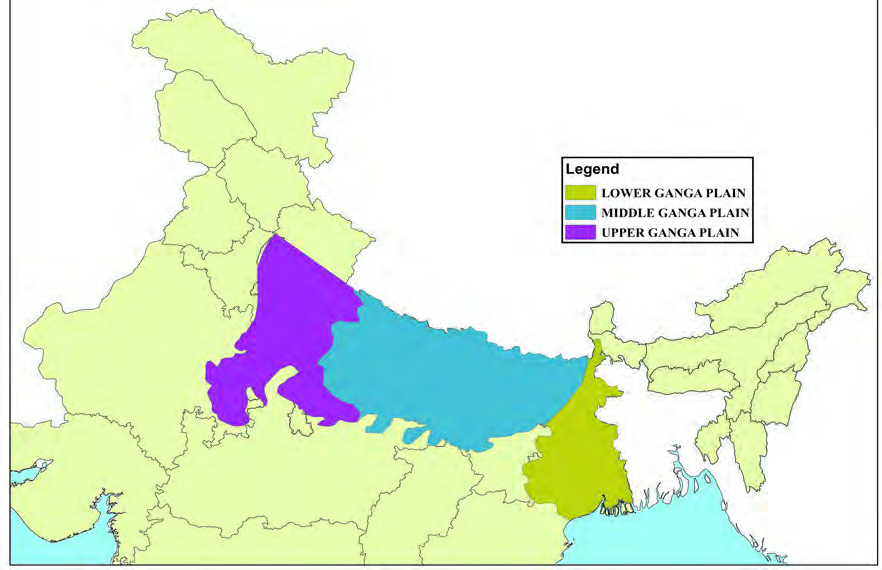<figcaption>Figure fig_ch02_p034_02 (Page 34)</figcaption></figure>
  <figure class="diagram-card" id="fig_ch02_p034_03"><figcaption>Figure fig_ch02_p034_03 (Page 34)</figcaption></figure>
  <figure class="diagram-card" id="fig_ch02_p034_04"><figcaption>Figure fig_ch02_p034_04 (Page 34)</figcaption></figure>
  <figure class="diagram-card" id="fig_ch02_p034_06"><figcaption>Figure fig_ch02_p034_06 (Page 34)</figcaption></figure>
  <figure class="diagram-card" id="fig_ch02_p034_07"><figcaption>Figure fig_ch02_p034_07 (Page 34)</figcaption></figure>
  <figure class="diagram-card" id="fig_ch02_p034_08"><figcaption>Figure fig_ch02_p034_08 (Page 34)</figcaption></figure>
  <figure class="diagram-card" id="fig_ch02_p034_10"><figcaption>Figure fig_ch02_p034_10 (Page 34)</figcaption></figure>
  <figure class="diagram-card" id="fig_ch02_p034_11"><figcaption>Figure fig_ch02_p034_11 (Page 34)</figcaption></figure>
  <figure class="diagram-card" id="fig_ch02_p034_12"><figcaption>Figure fig_ch02_p034_12 (Page 34)</figcaption></figure>
  <div class="page-content">
    <p>‹šuc-<br>34<br>ucuš–Œ‚c<br>ˆĕšŠ§—Ž›š†–Œ‚Ĺ›¡ź s›’Úš›<br>Ǚ›‚›¡xƭų –Œ‚“›‹šuŒš§ ucuš<br>–Œ‚c‹žˆ}c (x›Ņc2.4) †›Žœä›Úžs›’Ú§<br>Šcøš¢„”§ Œ‚Æ ˆ}›Ěš§ Œ†š†„›<br>“¡Ž ucuš–Œ‚c“DZšˆ›ă›Ž›Úųns<br>¢„”c 3.75äcx‚ŽNJs›¢šŒœǮÅ“›ɀ<br>‚›ǫh–Œ‚ciŎštį§iĹÅ<br>Ƃ¢„”§—Ž›š†Ɨ›mųœ–cǙš†<br>ā¢‘c {šÅtį§ˆDŽ›ŒŠcušÇmųœ<br>–cǙš†ā‘¡} x› ‹šuā¢‘c iÇ<br>¡Úšǫųucuš†„›c ucu¡} ¢ˆš•<br>s†„›s‘c ¢xÅųǫ †›¢äˆƂ⛍<br>›ž¡}š§e‚›“›”šŒšh–Œ‚c<br>Žžˆ¡ƀĞ‚§–Œŝ†›Žƀ›Æ†›ųc”Žš”Ž›<br>200<br>ŒœǮÅ iŽŒǫ<br>ucuš–Œ‚Ĺ›¡ź<br>¡ˆš‚“š xŽ›“§ s›’¢ÚšĞc ¡‚ڝs›’<br>¢ÚšĞŒš§<br>Ƃ…š†¢„šŠsÇ<br>z Š›ǘ§zŰÅ¢„šŠ§Š›š–§<br>–‚§z§mųœ†„›sÇڛ}›Æ<br>Ǚ›‚›¡xƭų<br>z ŠšŽ›¢„šŠ§Š›š–§Ž“›mųœ<br>†„›sÇڛ}›ÆǙ›‚›¡xƭų<br>z Žx§†š¢„šŠ§Ž“›x›†šŠ§mųœ<br>†„›sÇڛ}›ÆǙ›‚›¡xƭų<br>zxšz§¢„šŠ§x›†šŠ§{cmųœ<br>†„›sÇڛ}›ÆǙ›‚›¡xƭų<br>z–›Ű§–šuÅ¢„šŠ§{cx›†šŠ§<br>†„›sÇڝc–›Ű†„›ÚŒ›}›Æ<br>Ǚ›‚›¡xƭų<br>ucuš–Œ‚ciˆ“›‹šuāÇ<br>ucuš–Œ‚ciˆ“›‹šuāÇ<br>ŽšzǚšÄ<br>ŽšzǚšÄ<br>–Œ‚c<br>–Œ‚c<br>iˆŽ›<br>iˆŽ›<br>ucuš–Œ‚c<br>ucuš–Œ‚c<br>Œ…Dz<br>Œ…Dz<br>ucuš–Œ‚c<br>ucuš–Œ‚c<br>sœ’§ucuš<br>sœ’§ucuš<br>–Œ‚c<br>–Œ‚c<br>ƖǦˆŅš–Œ‚c<br>ƖǦˆŅš–Œ‚c<br>ˆĕšŠ§<br>ˆĕšŠ§<br>—Ž›š†<br>—Ž›š†<br>–Œ‚c<br>–Œ‚c<br>–žx›s<br>sœ’§ucuš–Œ‚c<br>Œ…Dzucuš–Œ‚c<br>iˆŽ›ucuš–Œ‚c<br>x›Ņc 2.6<br>MAP NOT TO SCALE<br>‹žŒ›”šȻˆŽŒš–“›¢”•‚sÇe}›Ǚš†ŒšÚ›ucuš–Œ‚¡Ĺ“œĬcŒžųš›<br>‚Žc‚›Ž›Úšc‹žˆ}c(x›Ņc 2.6)†›Žœä›ă§e“¡}Ǚš†cs¡ĬŞ<br>iˆŽ›ucuš–Œ‚c<br><br>Œ…DZucuš–Œ‚c<br>sœ’§ucuš–Œ‚c<br>z Š</p>
  </div>
</section>
<section class="page-section" id="page-35">
  <div class="page-header"><span class="page-number">Page 35</span></div>
  <figure class="diagram-card" id="fig_ch02_p035_01"><figcaption>Figure fig_ch02_p035_01 (Page 35)</figcaption></figure>
  <figure class="diagram-card" id="fig_ch02_p035_02"><figcaption>Figure fig_ch02_p035_02 (Page 35)</figcaption></figure>
  <figure class="diagram-card" id="fig_ch02_p035_05"><figcaption>Figure fig_ch02_p035_05 (Page 35)</figcaption></figure>
  <figure class="diagram-card" id="fig_ch02_p035_06"><figcaption>Figure fig_ch02_p035_06 (Page 35)</figcaption></figure>
  <figure class="diagram-card" id="fig_ch02_p035_07"><figcaption>Figure fig_ch02_p035_07 (Page 35)</figcaption></figure>
  <figure class="diagram-card" id="fig_ch02_p035_08"><figcaption>Figure fig_ch02_p035_08 (Page 35)</figcaption></figure>
  <figure class="diagram-card" id="fig_ch02_p035_09"><figcaption>Figure fig_ch02_p035_09 (Page 35)</figcaption></figure>
  <div class="page-content">
    <p>“›”š–Œ‚‹ž“›Æ<br>35<br>ƖǦˆŅš–Œ‚c<br>iĹ¢ŽŦDZÄ –Œ‚Ĺ›¡ź nǮ“c s›’Ú§ ‹šuŒš  ƖǥˆŅš<br>–Œ‚c ƖǥˆŅš‚šȺŽ  e–c‚šȺŽ e–c–Œ‚c mų›<br>ā¡† “DZ‚DZǘ ¢ˆŽs‘›Æe›¡ƀ}ųe–Œ›¡ź s›’¢ÚeǮc<br>Œ‚Æ Šcøš¢„”§ e‚›ÅśÚ}Ĺǫ<br>…Ɩ›¡} ˆ}›Ěš§<br>“¡Ž “DZšˆ›ăs›}ڝųh–Œ‚Ĺ›†§ns¢„”c720 s›¢šŒœǮÅ<br>†œ‘“c”Žš”Ž›60 Œ‚Æ70 s›¢šŒœǮÅ“¡Ž “œ‚›ŒĬ§Ɩǥ<br>ˆŅš–Œ‚Ĺ›¡ź‹žŽ›‹šucƂ¢„”ā‘cǙ›‚›¡xƭų‚§e–<br>Œ›š§ ¡ˆš‚¡“ iĹ¢ŽŦDZÄ –Œ‚Ĺ›¡ź<br>s›’¢ÚšĞǫ<br>‚}Å㍚›Ğš§ ƖǥˆŅš–Œ‚¡Ĺ  sÚšÚų¡‚ÿ›c<br>‹žŒ›”šȻˆŽŒš›  ƖǥˆŅš–Œ‚c ¢“›Ğ§ †›Æڝų “}Ú§<br>s›’ÚÄ —›Œš“c<br>s›’Ú§ ˆ‚§sš§†šušsųs‘c ¡‚Ú§<br>uš¢Žštš–›zŦ›šsųs‘c Œ›s›Åsųs‘c  ¢xÅų§  h<br>–Œ‚‹šu¡Ĺ ¢“Å‚›Ž›ă§ †›Åŝų ƖǥˆŅš–Œ‚Ĺ›¡ź<br>ˆ}›Ěšš›sœ’§ucuš–Œ‚cǙ›‚›¡xƭų<br>ns¢„”c 56275 x‚ŽNJ s›¢šŒœǮÅ “›ɀ‚›ǫ h –Œ‚c<br>ƖǥˆŅš†„›¡}c e‚›¡ź<br>¢ˆš•s†„›s‘¡}c<br>†›¢ä<br>ˆƂ⛍›ž¡} Žžˆ¡ƀĞ‚š§}œǘŒš†–§¢š—›‚§„›Šǰu§<br>mų›“š§ƖǥˆŅ¡}Ƃ…š†¢ˆš•s†„›sÇ<br>‹žˆ}c (x›Ņc 2.4) †›Žœä›ă§ ƖǥˆŅ¡} Ƃ…š† ¢ˆš•s†„›s<br>‘¡}Ǚš†cs¡ĬśgŦDZ¡}‹žˆ}Žžˆ¢Žt›Æ“Žă¢xÅŧ<br>m¡ź‹žˆ}¢”tŽĹ›Æ(My Own Atlas)iÇ¡ƀ}Ĺž<br>h<br>–Œ‚c<br>mÚƓ›”›s‘šÆ<br>–ƠųŒš§<br>mŦš§<br>mÚÆ “›”›sÇ mų§ †ŒÚ§ ¢†šÚǰ x›Ņc 2.7 †›Žœä›Úž<br>†„›sÇ<br>–Œ‚Ĺ›Æ<br>Ƃ¢“”›Ú¢ƠšÇ<br>p’Ú§<br>¡ˆ¡Ğų§<br>ssc f‚›†šÆ e“ “—›ă¡sšĬ“Žų e“–š<br>„āÇ (mÚÆ) pŽ “›”›¡} ŽžˆĹ›Æ †›¢äˆ›Ú¡ƀ}sc<br>¡xƭųgā¡†Žžˆ¡ƀ}ų ‹žŽžˆā‘š§mÚÆ“›”›sÇ<br>eǮ§–›¡ź<br>–—š¢Ĺš¡}<br>ƖǥˆŅš–Œ‚Ĺ›¡ź<br>Ǚš†c<br>s¡Ĭś gŦDZ¡} ‹žˆ}Žžˆ¢Žt›Æ “Žă¢xÅŧ m¡ź ‹žˆ}<br>¢”tŽĹ›Æ(My Own Atlas)iÇ¡ƀ}Ĺž</p>
  </div>
</section>
<section class="page-section" id="page-36">
  <div class="page-header"><span class="page-number">Page 36</span></div>
  <figure class="diagram-card" id="fig_ch02_p036_01"><figcaption>Figure fig_ch02_p036_01 (Page 36)</figcaption></figure>
  <figure class="diagram-card" id="fig_ch02_p036_02">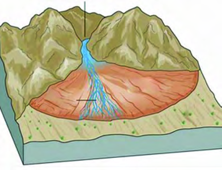<figcaption>Figure fig_ch02_p036_02 (Page 36)</figcaption></figure>
  <figure class="diagram-card" id="fig_ch02_p036_03"><figcaption>Figure fig_ch02_p036_03 (Page 36)</figcaption></figure>
  <figure class="diagram-card" id="fig_ch02_p036_04"><figcaption>Figure fig_ch02_p036_04 (Page 36)</figcaption></figure>
  <figure class="diagram-card" id="fig_ch02_p036_05"><figcaption>Figure fig_ch02_p036_05 (Page 36)</figcaption></figure>
  <figure class="diagram-card" id="fig_ch02_p036_06">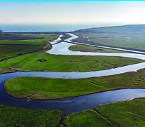<figcaption>Figure fig_ch02_p036_06 (Page 36)</figcaption></figure>
  <figure class="diagram-card" id="fig_ch02_p036_07">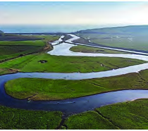<figcaption>Figure fig_ch02_p036_07 (Page 36)</figcaption></figure>
  <figure class="diagram-card" id="fig_ch02_p036_08"><figcaption>Figure fig_ch02_p036_08 (Page 36)</figcaption></figure>
  <figure class="diagram-card" id="fig_ch02_p036_09">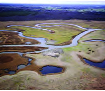<figcaption>Figure fig_ch02_p036_09 (Page 36)</figcaption></figure>
  <figure class="diagram-card" id="fig_ch02_p036_10">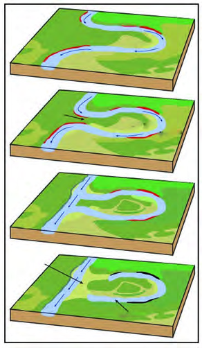<figcaption>Figure fig_ch02_p036_10 (Page 36)</figcaption></figure>
  <figure class="diagram-card" id="fig_ch02_p036_12"><figcaption>Figure fig_ch02_p036_12 (Page 36)</figcaption></figure>
  <div class="page-content">
    <p>‹šuc-<br>36<br>  <br>–Œ‚Ƃ¢„”ā‘›ž¡}‚}Å¡ųš<br>’sų †„›sÇ ˆ xšs<br>‘š›ˆ›Ž›ųp’Ú§‚œ¡Žs<br>¢ƠšÇ“‘̝ˆ‘̧p’s<br>sc ˆ›ųœ}“ qs§–§¢Šš‚}š<br>sāÇ ǔǏ›Úsc ¡xƭų<br>†Æs››Ğǫx›Ņc 2.8 †›Žœä›ă§<br>qs§–§¢Šš‚}šsā‘¡} Žˆœs<br>ŽcŒ†Ǡ›šÚž<br>x›Ņc2.7 <br>mÚÆ“›”›<br>ˆ›¡Ěš<br>ˆ›¡Ěš<br>’sų<br>’sų<br>†„›sÇ<br>†„›sÇ<br>mÚÆ“›”›<br>mÚÆ“›”›<br>–Œ‚c<br>–Œ‚c<br>x›Ņc2.9<br>†„œŒ›šÄ›w§<br>x›Ņc2.10<br>qs§–§¢Šš‚}šsāÇ<br>Œ›šÄs‘cqs§–§¢Šš<br>‚}šsā‘c<br>†„›‚šŽ‚¢ŒDZ†xŽ›“§sĚ¢‚š ¢†Ž› xŽ›“<br>ǫ¢‚šfƂ¢„”ā‘›ž¡}s}ų ¢ˆšs¢ƠšÇ<br>e“–š„†›¢äˆāÇ †„›¡} p’Ú›¡† ‚}Ǡ<br>¡ƀ}Ĺų e‚›¡ź ‰Œš› †„› “‘̧ ˆ‘<br>̧p’s›“āÇ(Œ›šÄsÇ) ǔǏ›Úų<br>‚}Å㍚ eˆŽ„† †›¢äˆƂ⛍ Œžc<br>gŎc “āÇ sž}‚Æ “‘ų ˆ›ųœ}§<br>p’Úsž}¢ƠšÇ †„› ¢†Åu‚› –ǴœsŽ›Úsc<br>†›¢äˆcŒžc “‘¡Ěš’s› ‹šuc †„›¡}<br>Ƃ…š† ‹šuŝ†›ųc ¢“Å¡ˆĞ§ pǮ¡ƀĞ ‚}šs<br>Œš› Œšsc ¡xƭų gŎc ‚}šsā‘š§<br>qs§–§¢Šš‚}šsāÇ<br>eˆŽ„†c<br>eˆŽ„†c<br>eˆŽ„†c<br>†›¢äˆc<br>†›¢äˆc<br>†›¢äˆc<br>x›Ņc2.8<br>qs§–§¢Šš<br>qs§–§¢Šš‚}šsā‘¡}ŽžˆœsŽc</p>
  </div>
</section>
<section class="page-section" id="page-37">
  <div class="page-header"><span class="page-number">Page 37</span></div>
  <figure class="diagram-card" id="fig_ch02_p037_01"><figcaption>Figure fig_ch02_p037_01 (Page 37)</figcaption></figure>
  <figure class="diagram-card" id="fig_ch02_p037_02"><figcaption>Figure fig_ch02_p037_02 (Page 37)</figcaption></figure>
  <figure class="diagram-card" id="fig_ch02_p037_03"><figcaption>Figure fig_ch02_p037_03 (Page 37)</figcaption></figure>
  <figure class="diagram-card" id="fig_ch02_p037_04"><figcaption>Figure fig_ch02_p037_04 (Page 37)</figcaption></figure>
  <figure class="diagram-card" id="fig_ch02_p037_06">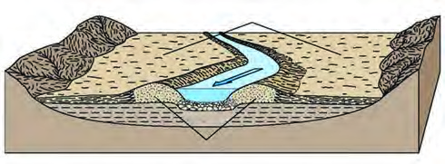<figcaption>Figure fig_ch02_p037_06 (Page 37)</figcaption></figure>
  <figure class="diagram-card" id="fig_ch02_p037_07"><figcaption>Figure fig_ch02_p037_07 (Page 37)</figcaption></figure>
  <figure class="diagram-card" id="fig_ch02_p037_08"><figcaption>Figure fig_ch02_p037_08 (Page 37)</figcaption></figure>
  <figure class="diagram-card" id="fig_ch02_p037_09"><figcaption>Figure fig_ch02_p037_09 (Page 37)</figcaption></figure>
  <figure class="diagram-card" id="fig_ch02_p037_11"><figcaption>Figure fig_ch02_p037_11 (Page 37)</figcaption></figure>
  <figure class="diagram-card" id="fig_ch02_p037_12"><figcaption>Figure fig_ch02_p037_12 (Page 37)</figcaption></figure>
  <div class="page-content">
    <p>“›”š–Œ‚‹ž“›Æ<br>37<br>†„›sÇgā¡†“‘̧ˆ‘̧p’sų‚›¡††„œŒ›šÄ›w§<br>e¡Ƽÿ›Æ†„œ“āÇmųš§e›¡ƀ}ų‚§pŽ†„œŒ›šÄ<br>›w§f§x›ŅśÆ†Æs››Ğǫ‚§ (x›Ņc)<br>‹žƂՂ›–“›¢”•‚s‘¡}e}›Ǚš†Ĺ›ÆiĹ¢ŽŦDZÄ<br>–Œ‚¡Ĺ“}ڝ†›ųc ¡‚¢ÚšĞ§Œžų§<br>Ƃ…š†¢Œts‘š›‚›Ž›Úǰ<br>z ‹šŠÅ<br>z ¡}š§<br>z mÚƖŒ‚āÇ<br>h¢Œts¢‘š¢Žšų›¡źc–“›¢”<br>•‚sÇ m¡Ŧš¡Úš¡ų§ †ŒÚ§<br>ˆŽ›¢”š…›Úǰ<br>–›“š›s§ˆÅ“‚†›ŽƩ§–ŒšŦŽŒš›<br>e‚›¡ź<br>¡‚ڝ‹šuŧ<br>sšų<br>‹šuŒš§ ‹šŠÅ –›“š›s§ Œ}›<br>“šŽĹ›†§ –ŒšŦŽŒš› xŽ›“§ e“<br>–š†›Úų›}ŝ†›ųc ns¢„”c 8<br>s›¢šŒœǮÅŒ‚Æ 10 s›¢šŒœǮÅ“¡Ž<br>“›ɀ‚›ǫ g}ā› ‹ž‹šuŒš›‚§<br>ˆÅ“‚‹šuŝ †›ųc “Žų †„›sÇ<br>¡sšĬ“Žų iŽ‘Ä sƼs‘c ˆš<br>s‘c†›¢äˆ›Ú¡ƀĞš§h–Œ‚<br>‹šuc Žžˆ¡ƀЛНǫ‚§ h iŽ‘Ä<br>sƼs‘¡}c ˆšs‘¡}ce}››<br>ž¡}†„›sÇp’sų‚›†šÆ†„›sÇ<br>h ‹šuā‘›Æ ő”DZŒšsų›Ƽ x›Ņc<br>2.12NJŗ›Úž<br>¢šsś¡ “›“›… Ƃ¢„”ā‘›¡ †„œŒ›šÄ›w§ qs§–§¢Šš<br>‚}šsāÇmų›“¡}x›ŅāÇiÇ¡ƀ}Ĺ›pŽ›z›ǮÆfƊc<br>‚ƭššÚž<br>x›Ņc 2.11<br>Ƃ‘–Œ‚āÇ<br>†„œxš§<br>†„œxš§<br>†„œ‚œŽĹ›ĞsÇ<br>†„œ‚œŽĹ›ĞsÇ<br>Ƃ‘–Œ‚āÇ<br>Ƃ‘–ŒĹ§ †„›sÇ sŽs“›Ě§ p’s<br>¢ƠšÇ e“ p’Ú›¡ÚšĬ“Žų mÚÆ<br>gŽsŽs‘›c<br>†›¢äˆ›Ú¡ƀЧ<br>–Œ‚<br>āÇŽžˆc¡sšǫųgā¡†Ƃ‘–ŒĹ§<br>mÚƆ›¢äˆ›ă§Žžˆ¡ƀ}ų–Œ‚āÇ<br>f‚›†šÆg“¡Ƃ‘–Œ‚āÇmų<br>“›‘›Úų Օ›Ú§ n¡ e†¢šzDZŒš<br>gŎcƂ‘–Œ‚ā‘›š§¢šsƂ”ǘ<br>Œšˆ†„œ‚}–cǗšŽā‘ci}¡}Ĺ‚§<br>p’s</p>
  </div>
</section>
<section class="page-section" id="page-38">
  <div class="page-header"><span class="page-number">Page 38</span></div>
  <figure class="diagram-card" id="fig_ch02_p038_01"><figcaption>Figure fig_ch02_p038_01 (Page 38)</figcaption></figure>
  <figure class="diagram-card" id="fig_ch02_p038_02">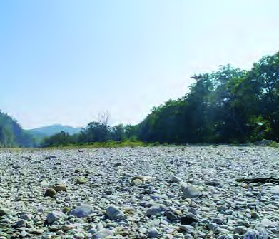<figcaption>Figure fig_ch02_p038_02 (Page 38)</figcaption></figure>
  <figure class="diagram-card" id="fig_ch02_p038_03"><figcaption>Figure fig_ch02_p038_03 (Page 38)</figcaption></figure>
  <figure class="diagram-card" id="fig_ch02_p038_04"><figcaption>Figure fig_ch02_p038_04 (Page 38)</figcaption></figure>
  <figure class="diagram-card" id="fig_ch02_p038_05">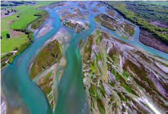<figcaption>Figure fig_ch02_p038_05 (Page 38)</figcaption></figure>
  <figure class="diagram-card" id="fig_ch02_p038_07"><figcaption>Figure fig_ch02_p038_07 (Page 38)</figcaption></figure>
  <figure class="diagram-card" id="fig_ch02_p038_08"><figcaption>Figure fig_ch02_p038_08 (Page 38)</figcaption></figure>
  <figure class="diagram-card" id="fig_ch02_p038_09"><figcaption>Figure fig_ch02_p038_09 (Page 38)</figcaption></figure>
  <figure class="diagram-card" id="fig_ch02_p038_10"><figcaption>Figure fig_ch02_p038_10 (Page 38)</figcaption></figure>
  <div class="page-content">
    <p>‹šuc-<br>38<br>x›Ņc2.12<br>‹šŠÅ¢Œt<br>x›Ņc2.13<br>¡}š§¢Œt<br>†„œz†Dz„ǵœˆsdžœÅăšÆ<br>‚›ĞsÇŒÆ“ŽƠsÇ<br>–Œ‚ā‘›Æ<br>†„›¡}<br>p’Úc<br>f’“c‚šŽ‚¢ŒDZ†“‘¡Žs“š§<br>f‚›†šÆ<br>e“<br>p’Ú›¡ÚšĬ<br>“Žų e“–š„āÇ †„œxšs‘›Æ<br>„Ǵœˆs‘šc (†„œz†DZ„ǴœˆsÇ) “”<br>ā‘›Æ‚›Ğs‘šc(†œÅăšÆ‚›ĞsÇ)<br>†›¢äˆ›Ú¡ƀ}ų<br>¡ˆš}›ŒÆ<br>ŒÆ xŽÆ mų›“ iÇ¡ƀ}ų<br>e“–š„ādž„œ‚}śÆ†›¢äˆ›<br>Ú¡ƀЧŽžˆ¡ƀ}ų ¢Žtœ‹žŽžˆā<br>‘š§ŒÆ“ŽƠsÇ<br>‹šŠÅ¢ŒtƩ§ –ŒšŦŽŒš› ns¢„”c 10<br>s›¢šŒœǮÅ<br>Œ‚Æ<br>20<br>s›¢šŒœǮÅ<br>“¡Ž<br>“œ‚››Æsš¡ƀ}ų ¡“ǫ¡ÚНǫx‚ƀ<br>†›ā‘š§<br>¡}š§<br>‹šŠÅ<br>¢Œt›Æ<br>eƂ‚DZ䌚sų†„›sÇg“›¡} ˆ†Åz†›<br>ڝųx›Ņc2.13 NJŗ›Úž¡}š§¢Œt›Æ<br>–ƠǏŒš<br>–Ǵš‹š“›s<br>––DZzšā‘c<br>…šŽš‘czœ“›“Åuā‘ŒĬ§<br>¡}š§¢ŒtƩ§ ¡‚Úš› ˆ‚›‚c ˆ’<br>‚Œš mÚƆ›¢äˆā‘šÆ Žžˆ¡ƀĞ –Œ<br>‚‹šuŒš§<br>mÚƖŒ‚āÇ<br>ˆ’<br>mÚƆ›¢äˆā¡‘ ‹cuÅ mųc ˆ‚›<br>mÚƆ›¢äˆā¡‘ tš„Å mųc e›<br>¡ƀ}ų †›¢äˆ‹žŽžˆā‘š †„œz†DZ<br>„ǴœˆsÇ<br>(Riverine Island) ŒÆ“ŽƠsÇ<br>Sandbars
 ÆǮsÇ mų›“ h ¢Œt<br>¡} –“›¢”•‚s‘š§ ˆ›¡Ěš’sų<br>eŽ“›sÇ(Braided Streams)“āÇ(Meanders)<br>qs§–§¢Šš‚}šsāÇmų›“cg“›}¡Ĺ<br>–“›¢”•‚s‘š§<br>iĹ¢ŽŦDZÄ<br>–Œ‚<br>ś¡ź“”Úš’§x–žx›ƀ›Úų÷Œš§<br>x“¡}†Æs››Ğǫ‚§x›Ņc2.14 †›Žœä›Úž<br>†</p>
  </div>
</section>
<section class="page-section" id="page-39">
  <div class="page-header"><span class="page-number">Page 39</span></div>
  <figure class="diagram-card" id="fig_ch02_p039_01"><figcaption>Figure fig_ch02_p039_01 (Page 39)</figcaption></figure>
  <figure class="diagram-card" id="fig_ch02_p039_02"><figcaption>Figure fig_ch02_p039_02 (Page 39)</figcaption></figure>
  <figure class="diagram-card" id="fig_ch02_p039_03"><figcaption>Figure fig_ch02_p039_03 (Page 39)</figcaption></figure>
  <figure class="diagram-card" id="fig_ch02_p039_05"><figcaption>Figure fig_ch02_p039_05 (Page 39)</figcaption></figure>
  <figure class="diagram-card" id="fig_ch02_p039_06"><figcaption>Figure fig_ch02_p039_06 (Page 39)</figcaption></figure>
  <figure class="diagram-card" id="fig_ch02_p039_07"><figcaption>Figure fig_ch02_p039_07 (Page 39)</figcaption></figure>
  <figure class="diagram-card" id="fig_ch02_p039_08"><figcaption>Figure fig_ch02_p039_08 (Page 39)</figcaption></figure>
  <figure class="diagram-card" id="fig_ch02_p039_09">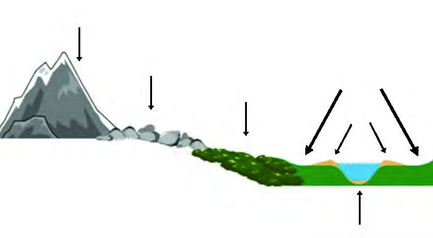<figcaption>Figure fig_ch02_p039_09 (Page 39)</figcaption></figure>
  <figure class="diagram-card" id="fig_ch02_p039_10"><figcaption>Figure fig_ch02_p039_10 (Page 39)</figcaption></figure>
  <figure class="diagram-card" id="fig_ch02_p039_11"><figcaption>Figure fig_ch02_p039_11 (Page 39)</figcaption></figure>
  <figure class="diagram-card" id="fig_ch02_p039_12"><figcaption>Figure fig_ch02_p039_12 (Page 39)</figcaption></figure>
  <figure class="diagram-card" id="fig_ch02_p039_13"><figcaption>Figure fig_ch02_p039_13 (Page 39)</figcaption></figure>
  <figure class="diagram-card" id="fig_ch02_p039_15"><figcaption>Figure fig_ch02_p039_15 (Page 39)</figcaption></figure>
  <figure class="diagram-card" id="fig_ch02_p039_16"><figcaption>Figure fig_ch02_p039_16 (Page 39)</figcaption></figure>
  <div class="page-content">
    <p>“›”š–Œ‚‹ž“›Æ<br>39<br>x›Ņc 2.14<br>iĹ¢ŽŦDzÄ–Œ‚Ĺ›¡ź“”Úš’§x<br>—›Œšc<br>†„œ‚šȻŽ<br>‹šŠÅ<br>‹cuÅ<br>tš„Å<br>¡}š§<br>f”“DZނƩ§ŒšŅŒšǫ<br>x›ŅœsŽc¢‚š‚§e}›Ǚš†ŒšÚ›Ƽ<br>ÆǯsÇ<br>–Œ‚ā‘›ž¡} p’s›<br>†„œŒtā¢‘š}§ e}Ú<br>¢ƠšÇ †„› “‘¡Ž –š“<br>…š†c p’sų †„›sÇ<br>“—›ă¡sšĬ“Žųe“<br>–š„Ĺ›¡źe‘“§sž}‚<br>š‚›†šc†„œzcsž}<br>‚š‚›†šcŒ›Ú†„›<br>s‘c h Ƃ¢„”ŧ £s“’›s‘š› ˆ›Ž›Ě§ p’sų<br>e¢ƀšÇ†„›sÇp’Ú›¡ÚšĬ“Žųe“–š„āÇh<br>£s“’›sÇڛ}›Æ†›¢äˆ›Ú¡ƀЧn‚šĬ§Ņ›¢sšš<br>Ղ››ǫ ‹žŽžˆāÇ Žžˆc¡sšǫų g“š§ ÆǮ<br>sÇ÷œÚ§e䎌š›¡ÆǮ&#x27;
mųeäŽĹ›¡ź<br>fՂ›¢š}§ –šŒDZŒǫ‚¡sšĬš§ g“Ʃ§ h ¢ˆŽ§<br>“ų‚§<br>x›Ņc 2.15<br>pŽÆǯšƂ¢„”c<br>iĹ¢ŽŦDZÄ–Œ‚ā‘¡}‹žƂՂ›“›‹šuā‘›ÆՕ›¢Ú¡e†<br>¢šzDZŒš“›‹šu¢Œ‚š›Ž›Úšc?<br>p’s›</p>
  </div>
</section>
<section class="page-section" id="page-40">
  <div class="page-header"><span class="page-number">Page 40</span></div>
  <figure class="diagram-card" id="fig_ch02_p040_01"><figcaption>Figure fig_ch02_p040_01 (Page 40)</figcaption></figure>
  <figure class="diagram-card" id="fig_ch02_p040_03"><figcaption>Figure fig_ch02_p040_03 (Page 40)</figcaption></figure>
  <figure class="diagram-card" id="fig_ch02_p040_04"><figcaption>Figure fig_ch02_p040_04 (Page 40)</figcaption></figure>
  <div class="page-content">
    <p>‹šuc-<br>40<br>iĹ¢ŽŦDZÄ<br>–Œ‚ā‘¡}<br>‹žƂՂ›–“›¢”•‚s¡‘ڝ›ă§<br>†›āÇŒ†Ǡ›šÚ›¢Ƽš£†–Åu›s––DZzŦzšāÇŒĴ§<br>Օ›£““›…DZcz†zœ“›‚cmų›“Žžˆ¡ƀ}Ĺų‚›ÆpŽƂ¢„”<br>ś¡ź ‹žƂՂ›–“›¢”•‚sÇ ¢ˆš¡Ĺ¡ų †›ÅĴšsŒš§<br>fƂ¢„”ŧe†‹“¡ƀ}ų sšš“ǙciŎŒ—š–Œ‚<br>ś¡Ƃ…š†sšš“Ǚš–“›¢”•‚sÇm¡ŦƼš¡Œų§†ŒÚ§<br>¢†šÚǰ<br>iĹ¢ŽŦDzÄ–Œ‚ā‘›¡ sšš“ǚ<br>£”‚Dzsšc<br>iĹ¢ŽŦDZ›Æ–š…šŽš›†“cŠÅŒ…DZ¢Ĺš¡}š§£”‚DZ<br>sš¡ŒĹų‚§ iĹ¢ŽŦDZÄ –Œ‚ā‘›¡ ‚¢ƀ› Œš–<br>āÇ ›–cŠc z†“Ž›Œš§ gښ‘“›Æ iĹ¢ŽŦDZÄ<br>–Œ‚ā‘›Æ e‚›£”‚DZc e†‹“¡ƀ}ų mŦ¡sšĬš§<br>iĹ¢ŽŦDZÄ –Œ‚ā‘›Æ e‚›£”‚DZc e†‹“¡ƀ}ų¡‚ų<br>›š¢Œš?<br>z sšš“Ǚ¡<br>Œ›‚¡ƀ}Ĺų –Œŝś¡ź –Ǵš…œ†Ĺ›Æ<br><br>†›ųcn¡es¡šš§iĹ¢ŽŦDZÄ–Œ‚ā‘¡} Œ›Ú<br>Ƃ¢„”ā‘cǙ›‚›¡xƭų‚§<br>z —›ŒšÄ ˆÅ“‚†›Žs‘›¡ ŒĚ“œ’§x e‚›”ÞŒš ”œ‚<br><br>ښǮ›†§sšŽŒšsų<br>zˆDŽ›¢Œ•DZ›Æ<br>†›ųc<br>“œ”ų<br>”œ‚ÚšǮ§<br>iĹ¢ŽŦDZÄ<br>–Œ‚Ĺ›¡ź ˆ}›ĚšÄ Ƃ¢„”ā‘›Æ —›Œc Œž}ÆŒĚ§<br><br>”œ‚‚Žcucmų›“Ʃ§sšŽŒšsų<br>ziŎšÅ…¢uš‘Ĺ›Æ<br>†›ųc<br>„䛁šÅ…¢uš‘Ĺ›¢Úǫ<br><br>–žŽDZ¡źe†c<br>z<br>£”‚DZsšĹ§iĹ¢ŽŦDZÄ–Œ‚ā‘›Æ¢†Ž›Œ’‹›ÚšĬ§<br>†„›¡}†›¢äˆƂ⛍¡}‰Œš›Žžˆc¡sšǫų‹žŽžˆāÇ<br>ˆĞ›s¡ƀ}Ĺž “›“Ž–š¢ÿ‚›s“›„DZ¡} –—š¢Ĺš¡} gŎc<br>‹žŽžˆā‘¡}x›ŅāÇ¢”tŽ›ă§pŽ›z›ǮÆfƊc‚ššÚž</p>
  </div>
</section>
    </main>
    <footer>
      <div class="nav-bar"><a href="part_1_pages_120.html">← Pages 1-20</a><a href="index.html">☰ Index</a><a href="part_1_pages_4160.html">Pages 41-60 →</a></div>
    </footer>
  </div>
</body>
</html>
